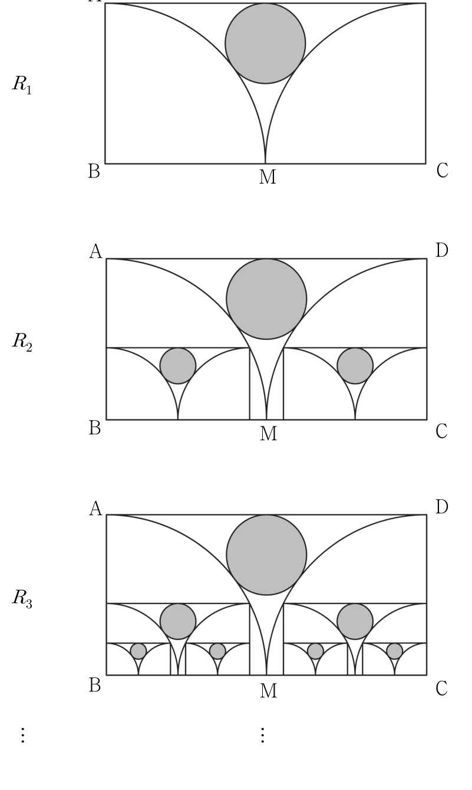
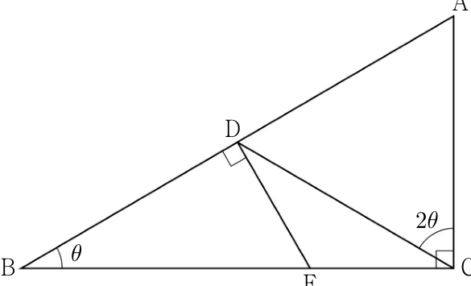

원본 (내부용)좌표평면에서 자연수 $n$에 대하여 직선 $3x-4y+4^{n} =0$과 $x$축, $y$축에 동시에 접하면서 원의 중심이 직선 $y=x$ 위에 있는 두 원의 반지름의 길이의 합을 $a_{n}$이라 하자. $\lim_{n \to \infty } {\frac{a_{n}}{4^{n} +1}}$의 값은? [4점]
① $\frac{5}{12}$② $\frac{1}{2}$③ $\frac{7}{12}$④ $\frac{2}{3}$⑤ $\frac{3}{4}$
원본 정답 ①
원본 풀이 (내부용)[출제의도] 수열의 극한을 이용하여 도형 문제 해결하기
\(x\)축, \(y\)축에 동시에 접하고 원의 중심이 직선 \(y=x\)…
**[18번 해설은 다음 페이지로 이어짐.]**
---
쌍둥이 1/5 · 4점 쌍둥이자연수 $n$에 대하여 직선 $8x-15y+5^n=0$과 두 좌표축에 동시에 접하고 중심이 $y=x$ 위에 있는 두 원의 반지름의 합을 $a_n$이라 한다. $120\lim_{n\to\infty}\frac{a_n}{5^n+2}$을 구하시오.
정답$17$ 두 중심은 $(r,r)$와 $(-r,-r)$. 법선 길이는 17이고 계수 차는 7이므로 반지름은 $5^n/24$, $5^n/10$. $a_n=(17/120)5^n$, 따라서 주어진 값은 17.
쌍둥이 2/5 · 4점 쌍둥이좌표평면에서 자연수 $n$에 대하여 직선 $5x-12y+3^{n}=0$과 $x$축, $y$축에 동시에 접하면서 중심이 직선 $y=x$ 위에 있는 두 원의 반지름의 길이의 합을 $a_{n}$이라 합니다. $\lim_{n\to\infty}\frac{a_{n}}{3^{n}+2}$의 값으로 옳은 것을 고르세요.
① $\frac{11}{60}$② $\frac{1}{5}$③ $\frac{13}{60}$④ $\frac{7}{30}$⑤ $\frac{1}{4}$
정답③ $\frac{13}{60}$ 두 축에 접하고 중심이 $y=x$ 위에 있는 원은 중심이 $(r,\ r)$ 또는 $(-r,\ -r)$이고 반지름이 $r\ (r>0)$입니다 중심이 $(r,\ r)$이면 $\frac{|5r-12r+3^{n}|}{13}=r$에서 $r=\frac{3^{n}}{20}$, 중심이 $(-r,\ -r)$이면 $\frac{|-5r+12r+3^{n}|}{13}=r$에서 $r=\frac{3^{n}}{6}$ $a_{n}=3^{n}\left(\frac{1}{20}+\frac{1}{6}\right)=\frac{13}{60}\times3^{n}$ $\lim_{n\to\infty}\frac{a_{n}}{3^{n}+2}=\lim_{n\to\infty}\frac{\frac{13}{60}}{1+\frac{2}{3^{n}}}=\frac{13}{60}$
숫자: 원본 3 4 4 0 4 1 → 쌍둥이 5 12 3 0 3 2 · 같은 수: 0 3
쌍둥이 3/5 · 4점 쌍둥이좌표평면에서 자연수 $n$에 대하여 직선 $8x-15y+2^{n}=0$과 $x$축, $y$축에 동시에 접하면서 중심이 직선 $y=x$ 위에 있는 두 원의 반지름의 길이의 합을 $a_{n}$이라 합니다. $\lim_{n\to\infty}\frac{a_{n}}{2^{n}+3}$의 값으로 옳은 것을 고르세요.
① $\frac{7}{60}$② $\frac{1}{8}$③ $\frac{2}{15}$④ $\frac{17}{120}$⑤ $\frac{3}{20}$
정답④ $\frac{17}{120}$ 두 축에 접하고 중심이 $y=x$ 위에 있는 원은 중심이 $(r,\ r)$ 또는 $(-r,\ -r)$이고 반지름이 $r\ (r>0)$입니다 중심이 $(r,\ r)$이면 $\frac{|8r-15r+2^{n}|}{17}=r$에서 $r=\frac{2^{n}}{24}$, 중심이 $(-r,\ -r)$이면 $\frac{|-8r+15r+2^{n}|}{17}=r$에서 $r=\frac{2^{n}}{10}$ $a_{n}=2^{n}\left(\frac{1}{24}+\frac{1}{10}\right)=\frac{17}{120}\times2^{n}$ $\lim_{n\to\infty}\frac{a_{n}}{2^{n}+3}=\lim_{n\to\infty}\frac{\frac{17}{120}}{1+\frac{3}{2^{n}}}=\frac{17}{120}$
숫자: 원본 3 4 4 0 4 1 → 쌍둥이 8 15 2 0 2 3 · 같은 수: 0 3
쌍둥이 4/5 · 4점 쌍둥이좌표평면에서 자연수 $n$에 대하여 직선 $7x-24y+5^{n}=0$과 $x$축, $y$축에 동시에 접하면서 중심이 직선 $y=x$ 위에 있는 두 원의 반지름의 길이의 합을 $a_{n}$이라 합니다. $\lim_{n\to\infty}\frac{a_{n}}{5^{n}+1}$의 값으로 옳은 것을 고르세요.
① $\frac{1}{8}$② $\frac{11}{84}$③ $\frac{23}{168}$④ $\frac{1}{7}$⑤ $\frac{25}{168}$
정답⑤ $\frac{25}{168}$ 두 축에 접하고 중심이 $y=x$ 위에 있는 원은 중심이 $(r,\ r)$ 또는 $(-r,\ -r)$이고 반지름이 $r\ (r>0)$입니다 중심이 $(r,\ r)$이면 $\frac{|7r-24r+5^{n}|}{25}=r$에서 $r=\frac{5^{n}}{42}$, 중심이 $(-r,\ -r)$이면 $\frac{|-7r+24r+5^{n}|}{25}=r$에서 $r=\frac{5^{n}}{8}$ $a_{n}=5^{n}\left(\frac{1}{42}+\frac{1}{8}\right)=\frac{25}{168}\times5^{n}$ $\lim_{n\to\infty}\frac{a_{n}}{5^{n}+1}=\lim_{n\to\infty}\frac{\frac{25}{168}}{1+\frac{1}{5^{n}}}=\frac{25}{168}$
숫자: 원본 3 4 4 0 4 1 → 쌍둥이 7 24 5 0 5 1 · 같은 수: 0 1
쌍둥이 5/5 · 4점 쌍둥이자연수 $n$에 대하여 직선 $5x-12y+7^n=0$과 두 좌표축에 동시에 접하고 중심이 $y=x$ 위에 있는 두 원의 반지름의 합을 $a_n$이라 한다. $60\lim_{n\to\infty}\frac{a_n}{7^n+9}$을 구하시오.
정답$13$ 첫 번째 원의 중심을 $(r,r)$라 두면 직선까지 거리가 $r$이므로 $|7^n-7r|=13r$이고, 양의 해는 $r=7^n/20$입니다. 두 번째 원의 중심을 $(-s,-s)$라 두면 $|7^n+7s|=13s$이므로 $s=7^n/6$입니다. $a_n=(1/20+1/6)7^n=13\cdot7^n/60$이므로 $60\lim_{n\to\infty}a_n/(7^n+9)=13$입니다.
원본 (내부용)함수 $f ( x ) = \frac{x-1}{2x-6}$과 $3$ 이상의 자연수 $k$에 대하여 $\lim_{n \to \infty } { \frac{| f ( 3-a ) |^{n+1}}{ 2^{n} + | 1-f ( 3+a ) |^{n} }} =k$ 를 만족시키는 모든 실수 $a$의 값의 합을 $g ( k )$라 하자. $\sum_{k=3}^{17} g ( k )$의 값은? [4점]
원본 풀이 (내부용)[출제의도] 등비수열의 극한을 이용하여 수열의 합 문제 해결하기
함수
\(
f(x)=\frac{x-1}{2x-6}
\)
에 대하여
\(
\begin{aligned}
|f(3-a)|
&=\left|\frac{(3-a)-1}{2(3-a)-6}\right|
=\left|\frac{2-a}{-2a}\right|
=\left|\frac{a-2}{2a}\right|,\\
|1-f(3+a)|
&=\left|1-\frac{(3+a)-1}{2(3+a)-6}\right|
=\left|\frac{a-2}{2a}\right|
\end{aligned}
\)
이다. \(h(a)=\frac{a-2}{2a}\ (a\ne0)\)라 하면
\(
\lim_{n\to\infty}
\frac{|f(3-a)|^{n+1}}{2^n+|1-f(3+a)|^n}
=
\lim_{n\to\infty}
\frac{|h(a)|^{n+1}}{2^n+|h(a)|^n}
\)
이다.
(i) \(|h(a)|<2\)일 때,
\(
\left|\frac{h(a)}2\right|<1
\)
이고
\(
\lim_{n\to\infty}\left|\frac{h(a)}2\right|^n=0
\)
이므로
\(
\lim_{n\to\infty}
\frac{|h(a)|^{n+1}}{2^n+|h(a)|^n}=0
\)
이 되어 \(k=0\)이다.
(ii) \(|h(a)|=2\)일 때,
\(
\lim_{n\to\infty}
\frac{|h(a)|^{n+1}}{2^n+|h(a)|^n}
=
\lim_{n\to\infty}\frac{2^{n+1}}{2^n+2^n}=1
\)
이 되어 \(k=1\)이다.
(iii) \(|h(a)|>2\)일 때,
\(
\left|\frac2{h(a)}\right|<1
\)
이고
\(
\lim_{n\to\infty}\left|\frac2{h(a)}\right|^n=0
\)
이므로
\(
\begin{aligned}
\lim_{n\to\infty}
\frac{|h(a)|^{n+1}}{2^n+|h(a)|^n}
&=\lim_{n\to\infty}
\frac{|h(a)|}{\left|\frac2{h(a)}\right|^n+1}\\
&=|h(a)|
\end{aligned}
\)
이다.
\(
|h(a)|=\left|\frac{a-2}{2a}\right|
=\left|\frac1a-\frac12\right|=k\quad(k\ge3\text{인 자연수})
\)
를 만족시키는 \(a\)를 구하면
\(
\frac1a-\frac12=k\text{일 때},\quad a=\frac2{2k+1}
\)
\(
\frac1a-\frac12=-k\text{일 때},\quad a=-\frac2{2k-1}
\)
이다. 따라서
\(
g(k)=-2\left(\frac1{2k-1}-\frac1{2k+1}\right)
\)
이다.
\(
\begin{aligned}
\sum_{k=3}^{17}g(k)
&=-2\sum_{k=3}^{17}\left(\frac1{2k-1}-\frac1{2k+1}\right)\\
&=-2\left(\frac15-\frac17+\frac17-\frac19+\cdots+\frac1{33}-\frac1{35}\right)\\
&=-2\left(\frac15-\frac1{35}\right)=-\frac{12}{35}
\end{aligned}
\)
쌍둥이 1/5 · 4점 쌍둥이함수 $f(x)=\frac{3(x-5)+3}{6(x-5)}$과 $4$ 이상의 자연수 k에 대하여 $\lim_{n\to\infty}\frac{|f(5-a)|^{n+1}}{4^n+|1-f(5+a)|^n}=k$를 만족시키는 모든 실수 a의 값의 합을 g(k)라 하자. $\sum_{k=5}^{11}g(k)$의 값을 구하시오.
① $- \frac{428}{207}$② $- \frac{221}{207}$③ $- \frac{14}{207}$④ $\frac{193}{207}$⑤ $\frac{400}{207}$
정답③ $- \frac{14}{207}$ 대입하면 $f(5-a)=\frac{3a-3}{6a},\quad1-f(5+a)=\frac{3a-3}{6a}$이므로 $r=\left|\frac{3a-3}{6a}\right|$라 두면 극한은 $\lim\frac{r^{n+1}}{4^n+r^n}$이다. $r<4\Rightarrow0,\quad r=4\Rightarrow 4/2,\quad r>4\Rightarrow r$가 되려면 r=k이다.$k\ge 5>4\Rightarrow r=k$에서 두 해의 합은 따라서 망원합으로 $\frac{3a-3}{6a}=\pm k$다음은 모든 자연수 n에 대하여 $g(k)=\frac{3}{3-6k}+\frac{3}{3+6k}=-\frac{23}{3(4k^2-1)}$을 보이는 과정이다. f(k)와 g(n)을 라 할 때, $-\frac{3}3(\frac1{9}-\frac1{23})=- \frac{14}{207}$
쌍둥이 2/5 · 4점 쌍둥이함수 $f(x)=\frac{3(x-4)+2}{6(x-4)}$와 $3$ 이상의 자연수 k에 대하여 $\lim_{n\to\infty}\frac{|f(4-a)|^{n+1}}{3^n+|1-f(4+a)|^n}=k$를 만족시키는 모든 실수 a의 값의 합을 g(k)라 하자. $\sum_{k=4}^{9}g(k)$의 값을 구하시오.
① $- \frac{274}{133}$② $- \frac{141}{133}$③ $- \frac{8}{133}$④ $\frac{125}{133}$⑤ $\frac{258}{133}$
정답③ $- \frac{8}{133}$ 대입하면 $f(4-a)=\frac{3a-2}{6a},\quad1-f(4+a)=\frac{3a-2}{6a}$이므로 $r=\left|\frac{3a-2}{6a}\right|$라 두면 극한은 $\lim\frac{r^{n+1}}{3^n+r^n}$이다. $r<3\Rightarrow0,\quad r=3\Rightarrow 3/2,\quad r>3\Rightarrow r$가 되려면 r=k이다.$k\ge 4>3\Rightarrow r=k$에서 두 해의 합은 따라서 망원합으로 $\frac{3a-2}{6a}=\pm k$다음은 모든 자연수 n에 대하여 $g(k)=\frac{2}{3-6k}+\frac{2}{3+6k}=-\frac{22}{3(4k^2-1)}$를 보이는 과정이다. f(k)와 g(n)을 라 할 때, $-\frac{2}3(\frac1{7}-\frac1{19})=- \frac{8}{133}$
쌍둥이 3/5 · 4점 쌍둥이함수 $f(x)=\frac{3(x-6)+4}{6(x-6)}$와 $5$ 이상의 자연수 k에 대하여 $\lim_{n\to\infty}\frac{|f(6-a)|^{n+1}}{5^n+|1-f(6+a)|^n}=k$를 만족시키는 모든 실수 a의 값의 합을 g(k)라 하자. $\sum_{k=6}^{13}g(k)$의 값을 구하시오.
① $- \frac{1846}{891}$② $- \frac{955}{891}$③ $- \frac{64}{891}$④ $\frac{827}{891}$⑤ $\frac{1718}{891}$
정답③ $- \frac{64}{891}$ 대입하면 $f(6-a)=\frac{3a-4}{6a},\quad1-f(6+a)=\frac{3a-4}{6a}$이므로 $r=\left|\frac{3a-4}{6a}\right|$라 두면 극한은 $\lim\frac{r^{n+1}}{5^n+r^n}$이다. $r<5\Rightarrow0,\quad r=5\Rightarrow 5/2,\quad r>5\Rightarrow r$가 되려면 r=k이다.$k\ge 6>5\Rightarrow r=k$에서 두 해의 합은 따라서 망원합으로 $\frac{3a-4}{6a}=\pm k$다음은 모든 자연수 n에 대하여 $g(k)=\frac{4}{3-6k}+\frac{4}{3+6k}=-\frac{24}{3(4k^2-1)}$를 보이는 과정이다. f(k)와 g(n)을 라 할 때, $-\frac{4}3(\frac1{11}-\frac1{27})=- \frac{64}{891}$
쌍둥이 4/5 · 4점 쌍둥이함수 $f(x)=\frac{3(x-7)+5}{6(x-7)}$와 $3$ 이상의 자연수 k에 대하여 $\lim_{n\to\infty}\frac{|f(7-a)|^{n+1}}{3^n+|1-f(7+a)|^n}=k$를 만족시키는 모든 실수 a의 값의 합을 g(k)라 하자. $\sum_{k=4}^{8}g(k)$의 값을 구하시오.
① $- \frac{764}{357}$② $- \frac{407}{357}$③ $- \frac{50}{357}$④ $\frac{307}{357}$⑤ $\frac{664}{357}$
정답③ $- \frac{50}{357}$ 대입하면 $f(7-a)=\frac{3a-5}{6a},\quad1-f(7+a)=\frac{3a-5}{6a}$이므로 $r=\left|\frac{3a-5}{6a}\right|$라 두면 극한은 $\lim\frac{r^{n+1}}{3^n+r^n}$이다. $r<3\Rightarrow0,\quad r=3\Rightarrow 3/2,\quad r>3\Rightarrow r$가 되려면 r=k이다.$k\ge 4>3\Rightarrow r=k$에서 두 해의 합은 따라서 망원합으로 $\frac{3a-5}{6a}=\pm k$다음은 모든 자연수 n에 대하여 $g(k)=\frac{5}{3-6k}+\frac{5}{3+6k}=-\frac{25}{3(4k^2-1)}$를 보이는 과정이다. f(k)와 g(n)을 라 할 때, $-\frac{5}3(\frac1{7}-\frac1{17})=- \frac{50}{357}$
쌍둥이 5/5 · 4점 쌍둥이함수 $f(x)=\frac{3(x-8)+7}{6(x-8)}$과 $4$ 이상의 자연수 k에 대하여 $\lim_{n\to\infty}\frac{|f(8-a)|^{n+1}}{4^n+|1-f(8+a)|^n}=k$를 만족시키는 모든 실수 a의 값의 합을 g(k)라 하자. $\sum_{k=5}^{9}g(k)$의 값을 구하시오.
① $- \frac{1096}{513}$② $- \frac{583}{513}$③ $- \frac{70}{513}$④ $\frac{443}{513}$⑤ $\frac{956}{513}$
정답③ $- \frac{70}{513}$ 대입하면 $f(8-a)=\frac{3a-7}{6a},\quad1-f(8+a)=\frac{3a-7}{6a}$이므로 $r=\left|\frac{3a-7}{6a}\right|$라 두면 극한은 $\lim\frac{r^{n+1}}{4^n+r^n}$이다. $r<4\Rightarrow0,\quad r=4\Rightarrow 4/2,\quad r>4\Rightarrow r$가 되려면 r=k이다.$k\ge 5>4\Rightarrow r=k$에서 두 해의 합은 따라서 망원합으로 $\frac{3a-7}{6a}=\pm k$다음은 모든 자연수 n에 대하여 $g(k)=\frac{7}{3-6k}+\frac{7}{3+6k}=-\frac{27}{3(4k^2-1)}$을 보이는 과정이다. f(k)와 g(n)을 라 할 때, $-\frac{7}3(\frac1{9}-\frac1{19})=- \frac{70}{513}$
원본 (내부용)수열 $\{ a_{n} \}$에 대하여 $\sum_{n=1}^{\infty } ( a_{n} - \frac{5n}{n+2} ) =6$일 때, $\lim_{n \to \infty } { ( 4a_{n} +3 )}$의 값을 구하시오. [3점]
원본 정답 23
원본 풀이 (내부용)[출제의도] 급수의 수렴 이해하기
\(
\sum_{n=1}^{\infty}\left(a_n-\frac{5n}{n+2}\right)
\)
가 수렴하므로
\(
\lim_{n\to\infty}\left(a_n-\frac{5n}{n+2}\right)=0
\)
이다. 따라서
\(
\begin{aligned}
\lim_{n\to\infty}a_n
&=\lim_{n\to\infty}\left(a_n-\frac{5n}{n+2}\right)
+\lim_{n\to\infty}\frac{5n}{n+2}\\
&=0+5=5
\end{aligned}
\)
이다. 그러므로
\(
\lim_{n\to\infty}(4a_n+3)=4\times5+3=23
\)
이다.
생성기 숫자판 1/6 · G2M6-03#0수열 $\left\{a_{n}\right\}$에 대하여 $\sum_{n=1}^{\infty}\left(a_{n}-\frac{10n}{2n+5}\right)=8$일 때, $\lim_{n\to\infty}\left(4a_{n}+5\right)$의 값을 구하세요.
생성기 숫자판 2/6 · G2M6-03#0수열 $\left\{a_{n}\right\}$에 대하여 $\sum_{n=1}^{\infty}\left(a_{n}-\frac{12n}{n+4}\right)=11$일 때, $\lim_{n\to\infty}\left(5a_{n}+5\right)$의 값을 구하세요.
생성기 숫자판 3/6 · G2M6-03#0수열 $\left\{a_{n}\right\}$에 대하여 $\sum_{n=1}^{\infty}\left(a_{n}-\frac{12n}{2n-4}\right)=2$일 때, $\lim_{n\to\infty}\left(4a_{n}+1\right)$의 값을 구하세요.
생성기 숫자판 4/6 · G2M6-03#0수열 $\left\{a_{n}\right\}$에 대하여 $\sum_{n=1}^{\infty}\left(a_{n}-\frac{12n}{n+5}\right)=10$일 때, $\lim_{n\to\infty}\left(6a_{n}+3\right)$의 값을 구하세요.
생성기 숫자판 5/6 · G2M6-03#0수열 $\left\{a_{n}\right\}$에 대하여 $\sum_{n=1}^{\infty}\left(a_{n}-\frac{6n}{2n-5}\right)=19$일 때, $\lim_{n\to\infty}\left(8a_{n}+5\right)$의 값을 구하세요.
생성기 숫자판 6/6 · G2M6-03#0수열 $\left\{a_{n}\right\}$에 대하여 $\sum_{n=1}^{\infty}\left(a_{n}-\frac{5n}{n+4}\right)=6$일 때, $\lim_{n\to\infty}\left(6a_{n}+6\right)$의 값을 구하세요.
원본 풀이 (내부용)[출제의도] 급수 이해하기
이차방정식의 근과 계수의 관계에서 \(a_n=n^2-1\)이다. 따라서
\(
\begin{aligned}
\sum_{n=2}^{\infty}\frac2{a_n}
&=\lim_{n\to\infty}\sum_{k=2}^{n}\frac2{a_k}\\
&=\lim_{n\to\infty}\sum_{k=2}^{n}
\frac2{(k-1)(k+1)}\\
&=\lim_{n\to\infty}\sum_{k=2}^{n}
\left(\frac1{k-1}-\frac1{k+1}\right)\\
&=\lim_{n\to\infty}
\left\{\left(1-\frac13\right)
+\left(\frac12-\frac14\right)
+\left(\frac13-\frac15\right)+\cdots
+\left(\frac1{n-2}-\frac1n\right)
+\left(\frac1{n-1}-\frac1{n+1}\right)\right\}\\
&=\lim_{n\to\infty}\left\{1+\frac12-\frac1n-\frac1{n+1}\right\}\\
&=\frac32
\end{aligned}
\)
이다.
생성기 숫자판 1/6 · G2M6-03#6자연수 $n$에 대하여 $x$에 대한 이차방정식 $x^{2}-2nx+n^{2}-36=0$의 두 근의 곱을 $a_{n}$이라 할 때, $\sum_{n=7}^{\infty}\frac{19}{a_{n}}$의 값으로 옳은 것을 고르세요.
① $\frac{1301759}{332640}$② $\frac{1468079}{332640}$③ $\frac{1634399}{332640}$④ $\frac{1800719}{332640}$⑤ $\frac{1967039}{332640}$
정답③ $\frac{1634399}{332640}$ 근과 계수의 관계에 의하여 $a_{n}=n^{2}-36=\left(n-6\right)\left(n+6\right)$ $\frac{19}{a_{n}}=\frac{19}{12}\left(\frac{1}{n-6}-\frac{1}{n+6}\right)$ 부분합에서 앞뒤 항이 지워져 $1+\frac{1}{2}+\frac{1}{3}+\frac{1}{4}+\frac{1}{5}+\frac{1}{6}+\frac{1}{7}+\frac{1}{8}+\frac{1}{9}+\frac{1}{10}+\frac{1}{11}+\frac{1}{12}$만 남고, 나머지 항은 $0$으로 수렴하므로 $\sum_{n=7}^{\infty}\frac{19}{a_{n}}=\frac{19}{12}\left(1+\frac{1}{2}+\frac{1}{3}+\frac{1}{4}+\frac{1}{5}+\frac{1}{6}+\frac{1}{7}+\frac{1}{8}+\frac{1}{9}+\frac{1}{10}+\frac{1}{11}+\frac{1}{12}\right)$ $=\frac{1634399}{332640}$
숫자: 원본 2 1 0 2 2 → 쌍둥이 2 36 0 7 19 · 같은 수: 0 2
생성기 숫자판 2/6 · G2M6-03#6자연수 $n$에 대하여 $x$에 대한 이차방정식 $x^{2}-2nx+n^{2}-16=0$의 두 근의 곱을 $a_{n}$이라 할 때, $\sum_{n=5}^{\infty}\frac{26}{a_{n}}$의 값으로 옳은 것을 고르세요.
① $\frac{7653}{1120}$② $\frac{8213}{1120}$③ $\frac{8773}{1120}$④ $\frac{9333}{1120}$⑤ $\frac{9893}{1120}$
정답⑤ $\frac{9893}{1120}$ 근과 계수의 관계에 의하여 $a_{n}=n^{2}-16=\left(n-4\right)\left(n+4\right)$ $\frac{26}{a_{n}}=\frac{13}{4}\left(\frac{1}{n-4}-\frac{1}{n+4}\right)$ 부분합에서 앞뒤 항이 지워져 $1+\frac{1}{2}+\frac{1}{3}+\frac{1}{4}+\frac{1}{5}+\frac{1}{6}+\frac{1}{7}+\frac{1}{8}$만 남고, 나머지 항은 $0$으로 수렴하므로 $\sum_{n=5}^{\infty}\frac{26}{a_{n}}=\frac{13}{4}\left(1+\frac{1}{2}+\frac{1}{3}+\frac{1}{4}+\frac{1}{5}+\frac{1}{6}+\frac{1}{7}+\frac{1}{8}\right)$ $=\frac{9893}{1120}$
숫자: 원본 2 1 0 2 2 → 쌍둥이 2 16 0 5 26 · 같은 수: 0 2
생성기 숫자판 3/6 · G2M6-03#6자연수 $n$에 대하여 $x$에 대한 이차방정식 $x^{2}-2nx+n^{2}-16=0$의 두 근의 곱을 $a_{n}$이라 할 때, $\sum_{n=5}^{\infty}\frac{17}{a_{n}}$의 값으로 옳은 것을 고르세요.
① $\frac{9577}{2240}$② $\frac{10697}{2240}$③ $\frac{11817}{2240}$④ $\frac{12937}{2240}$⑤ $\frac{14057}{2240}$
정답④ $\frac{12937}{2240}$ 근과 계수의 관계에 의하여 $a_{n}=n^{2}-16=\left(n-4\right)\left(n+4\right)$ $\frac{17}{a_{n}}=\frac{17}{8}\left(\frac{1}{n-4}-\frac{1}{n+4}\right)$ 부분합에서 앞뒤 항이 지워져 $1+\frac{1}{2}+\frac{1}{3}+\frac{1}{4}+\frac{1}{5}+\frac{1}{6}+\frac{1}{7}+\frac{1}{8}$만 남고, 나머지 항은 $0$으로 수렴하므로 $\sum_{n=5}^{\infty}\frac{17}{a_{n}}=\frac{17}{8}\left(1+\frac{1}{2}+\frac{1}{3}+\frac{1}{4}+\frac{1}{5}+\frac{1}{6}+\frac{1}{7}+\frac{1}{8}\right)$ $=\frac{12937}{2240}$
숫자: 원본 2 1 0 2 2 → 쌍둥이 2 16 0 5 17 · 같은 수: 0 2
생성기 숫자판 4/6 · G2M6-03#6자연수 $n$에 대하여 $x$에 대한 이차방정식 $x^{2}-2nx+n^{2}-16=0$의 두 근의 곱을 $a_{n}$이라 할 때, $\sum_{n=5}^{\infty}\frac{7}{a_{n}}$의 값으로 옳은 것을 고르세요.
① $\frac{441}{320}$② $\frac{601}{320}$③ $\frac{761}{320}$④ $\frac{921}{320}$⑤ $\frac{1081}{320}$
정답③ $\frac{761}{320}$ 근과 계수의 관계에 의하여 $a_{n}=n^{2}-16=\left(n-4\right)\left(n+4\right)$ $\frac{7}{a_{n}}=\frac{7}{8}\left(\frac{1}{n-4}-\frac{1}{n+4}\right)$ 부분합에서 앞뒤 항이 지워져 $1+\frac{1}{2}+\frac{1}{3}+\frac{1}{4}+\frac{1}{5}+\frac{1}{6}+\frac{1}{7}+\frac{1}{8}$만 남고, 나머지 항은 $0$으로 수렴하므로 $\sum_{n=5}^{\infty}\frac{7}{a_{n}}=\frac{7}{8}\left(1+\frac{1}{2}+\frac{1}{3}+\frac{1}{4}+\frac{1}{5}+\frac{1}{6}+\frac{1}{7}+\frac{1}{8}\right)$ $=\frac{761}{320}$
숫자: 원본 2 1 0 2 2 → 쌍둥이 2 16 0 5 7 · 같은 수: 0 2
생성기 숫자판 5/6 · G2M6-03#6자연수 $n$에 대하여 $x$에 대한 이차방정식 $x^{2}-2nx+n^{2}-36=0$의 두 근의 곱을 $a_{n}$이라 할 때, $\sum_{n=7}^{\infty}\frac{27}{a_{n}}$의 값으로 옳은 것을 고르세요.
① $\frac{61381}{12320}$② $\frac{67541}{12320}$③ $\frac{73701}{12320}$④ $\frac{79861}{12320}$⑤ $\frac{86021}{12320}$
정답⑤ $\frac{86021}{12320}$ 근과 계수의 관계에 의하여 $a_{n}=n^{2}-36=\left(n-6\right)\left(n+6\right)$ $\frac{27}{a_{n}}=\frac{9}{4}\left(\frac{1}{n-6}-\frac{1}{n+6}\right)$ 부분합에서 앞뒤 항이 지워져 $1+\frac{1}{2}+\frac{1}{3}+\frac{1}{4}+\frac{1}{5}+\frac{1}{6}+\frac{1}{7}+\frac{1}{8}+\frac{1}{9}+\frac{1}{10}+\frac{1}{11}+\frac{1}{12}$만 남고, 나머지 항은 $0$으로 수렴하므로 $\sum_{n=7}^{\infty}\frac{27}{a_{n}}=\frac{9}{4}\left(1+\frac{1}{2}+\frac{1}{3}+\frac{1}{4}+\frac{1}{5}+\frac{1}{6}+\frac{1}{7}+\frac{1}{8}+\frac{1}{9}+\frac{1}{10}+\frac{1}{11}+\frac{1}{12}\right)$ $=\frac{86021}{12320}$
숫자: 원본 2 1 0 2 2 → 쌍둥이 2 36 0 7 27 · 같은 수: 0 2
생성기 숫자판 6/6 · G2M6-03#6자연수 $n$에 대하여 $x$에 대한 이차방정식 $x^{2}-2nx+n^{2}-4=0$의 두 근의 곱을 $a_{n}$이라 할 때, $\sum_{n=3}^{\infty}\frac{12}{a_{n}}$의 값으로 옳은 것을 고르세요.
① $\frac{25}{4}$② $\frac{27}{4}$③ $\frac{29}{4}$④ $\frac{31}{4}$⑤ $\frac{25}{2}$
정답① $\frac{25}{4}$ 근과 계수의 관계에 의하여 $a_{n}=n^{2}-4=\left(n-2\right)\left(n+2\right)$ $\frac{12}{a_{n}}=3\left(\frac{1}{n-2}-\frac{1}{n+2}\right)$ 부분합에서 앞뒤 항이 지워져 $1+\frac{1}{2}+\frac{1}{3}+\frac{1}{4}$만 남고, 나머지 항은 $0$으로 수렴하므로 $\sum_{n=3}^{\infty}\frac{12}{a_{n}}=3\left(1+\frac{1}{2}+\frac{1}{3}+\frac{1}{4}\right)$ $=\frac{25}{4}$
숫자: 원본 2 1 0 2 2 → 쌍둥이 2 4 0 3 12 · 같은 수: 0 2
7. 2018년 6월 나형 21번 · 4점 · 미적분 · 4점 쌍둥이
원본 (내부용)구간 $( 0, \infty )$에서 정의된 함수 $f ( x )$를 $f ( x ) = \frac{ ( k+1 ) x+3k+6}{3 ( x+1 )}$ 이라 할 때, 자연수 $n$에 대하여 다음 조건을 만족시키는 모든 자연수 $k$의 값의 합을 $a_{n}$이라 하자. 함수 $f ( x )$의 치역의 원소 중 정수의 개수는 $4n$이다. $\sum_{n=1}^{10} a_{n}$의 값은? [4점]
① $600$② $610$③ $620$④ $630$⑤ $640$
그림·참고 단답형(22~30) ① $600$ ② $610$ ③ $620$ ④ $630$ ⑤ $640$ 단답형(22~30)
원본 정답 ④
원본 풀이 (내부용)[출제의도] 수열 문제 해결하기
\(
\begin{aligned}
f(x)
&=\frac{(k+1)x+3k+6}{3(x+1)}\\
&=\frac{(k+1)(x+1)+2k+5}{3(x+1)}\\
&=\frac{2k+5}{3(x+1)}+\frac{k+1}{3}
\end{aligned}
\)
이므로 함수 \(y=f(x)\)의 그래프는 다음과 같다.
그림: 수직 점근선은 \(x=-1\), 수평 점근선은 \(y=\frac{k+1}{3}\)이다. \(x=0\)에서 열린 점의 높이는 \(k+2\)이고, 곡선은 \(x>-1\)에서 감소하면서 수평 점근선에 가까워진다.
따라서 함수 \(f(x)\)의 치역은
\(
\left\{y\ \middle|\ \frac{k+1}{3}<y<k+2\right\}
\)
이다. 함수 \(f(x)\)의 치역의 원소 중 정수의 개수는 \(4n\)이므로, \(\frac{k+1}{3}\)보다 크고 \(k+2\)보다 작은 정수의 개수가 \(4n\)이면 된다.
(i) \(k=3m-1\ (m\text{은 자연수})\)
\(\frac{k+1}{3}\)보다 큰 가장 작은 정수는
\(
\frac{k+1}{3}+1=\frac{k+4}{3}
\)
이므로 치역의 원소 중 정수의 개수는
\(
k+2-\frac{k+4}{3}
=\frac{3k+6-k-4}{3}
\)
이다. 이를 \(4n\)과 같게 두면
\(
\frac{2k+2}{3}=4n
\)
이므로 \(k=6n-1\)이다. 그러므로 조건을 만족하는 자연수 \(k\)는 \(6n-1\)이다.
(ii) \(k=3m-2\ (m\text{은 자연수})\)
\(\frac{k+1}{3}\)보다 큰 가장 작은 정수는
\(
\frac{k+1}{3}+1=\frac{k+4}{3}
\)
이므로 치역의 원소 중 정수의 개수는
\(
k+2-\frac{k+4}{3}=4n
\)
이다. 즉,
\(
\frac{3k+6-k-4}{3}=4n
\)
에서 \(\frac{2k+2}{3}=4n\)이므로 \(k=6n-1\)이다.
(iii) \(k=3m\ (m\text{은 자연수})\)
\(\frac{k+1}{3}\)보다 큰 가장 작은 정수는
\(
\frac{k+1}{3}+\frac23=\frac{k+3}{3}
\)
이므로 치역의 원소 중 정수의 개수는
\(
k+2-\frac{k+3}{3}=4n
\)
이다. 즉,
\(
\frac{3k+6-k-3}{3}=4n
\)
에서 \(\frac{2k+3}{3}=4n\)이므로 \(k=\frac{12n-3}{2}=6n-\frac32\)이다. 따라서 치역의 원소 중 정수의 개수가 \(4n\)이 되도록 하는 자연수 \(k\)는 존재하지 않는다.
(i), (ii), (iii)에 의해 치역의 원소 중 정수의 개수가 \(4n\)이 되도록 하는 자연수 \(k\)의 값의 합은
\(
12n-3
\)
이므로 \(a_n=12n-3\)이다. 따라서
\(
\sum_{n=1}^{10}a_n=\sum_{n=1}^{10}(12n-3)=630
\)
이다.
**[다른 풀이]**
\(
\begin{aligned}
f(x)
&=\frac{(k+1)x+3k+6}{3(x+1)}
=\frac{(k+1)(x+1)+2k+5}{3(x+1)}\\
&=\frac{2k+5}{3(x+1)}+\frac{k+1}{3}
\end{aligned}
\)
이므로 함수 \(y=f(x)\)의 그래프는 다음과 같다.
그림: 수직 점근선은 \(x=-1\), 수평 점근선은 \(y=\frac{k+1}{3}\)이다. \(x=0\)의 열린 점은 \(y=k+2\)에 있다. 곡선은 \(x>-1\)에서 감소하며 수평 점근선에 가까워진다.
따라서 함수 \(f(x)\)의 치역은
\(
\left\{y\ \middle|\ \frac{k+1}{3}<y<k+2\right\}
\)
이다.
쌍둥이 1/5 · 4점 쌍둥이구간 $\left(0,\ \infty\right)$에서 정의된 함수 $f\left(x\right)$를 $f\left(x\right)=\frac{\left(k+1\right)x+4k+8}{4\left(x+1\right)}$이라 할 때, 자연수 $n$에 대하여 「함수 $f\left(x\right)$의 치역의 원소 중 정수의 개수는 $5n$입니다.」를 만족시키는 모든 자연수 $k$의 값의 합을 $a_{n}$이라 하겠습니다. $\sum_{n=1}^{10}a_{n}$의 값으로 옳은 것을 고르세요.
① $457$② $462$③ $467$④ $472$⑤ $477$
정답③ $467$ $f\left(x\right)=\frac{k+1}{4}+\frac{3k+7}{4\left(x+1\right)}$이고 $x>0$에서 감소하므로 치역은 $\frac{k+1}{4}<y<k+2$ 정수의 개수는 $\left(k+1\right)-\left[\frac{k+1}{4}\right]$ ($\left[\ \right]$는 가우스 기호) $k+1=4j+r$ ($j$는 $0$ 이상의 정수, $0\le r<4$)로 놓으면 정수의 개수는 $4j+r-j=3j+r$이고, 이 값이 $5n$이 되는 $\left(j,\ r\right)$를 찾아 $k=4j+r-1$을 구합니다. $3j+r=5n$, $0\le r<4$이므로 $r$의 값마다 $j$가 자연수인지 확인합니다. $n=1$: $\left(j,\ r\right)=\left(1,\ 2\right)$에서 $k=5$; $n=2$: $\left(j,\ r\right)=\left(3,\ 1\right)$에서 $k=12$; $n=3$: $\left(j,\ r\right)=\left(5,\ 0\right)$에서 $k=19$, $\left(j,\ r\right)=\left(4,\ 3\right)$에서 $k=18$; 같은 방법으로 나머지 $n$도 구합니다. $a_{n}$을 차례로 구하면 $a_{1}=5,\ a_{2}=12,\ a_{3}=37,\ a_{4}=25,\ a_{5}=32,\ a_{6}=77,\ a_{7}=45,\ a_{8}=52,\ a_{9}=117,\ a_{10}=65$ $\sum_{n=1}^{10}a_{n}=467$
쌍둥이 2/5 · 4점 쌍둥이구간 $\left(0,\ \infty\right)$에서 정의된 함수 $f\left(x\right)$를 $f\left(x\right)=\frac{\left(k+1\right)x+2k+4}{2\left(x+1\right)}$이라 할 때, 자연수 $n$에 대하여 「함수 $f\left(x\right)$의 치역의 원소 중 정수의 개수는 $3n$입니다.」를 만족시키는 모든 자연수 $k$의 값의 합을 $a_{n}$이라 하겠습니다. $\sum_{n=1}^{12}a_{n}$의 값으로 옳은 것을 고르세요.
① $880$② $885$③ $890$④ $895$⑤ $900$
정답⑤ $900$ $f\left(x\right)=\frac{k+1}{2}+\frac{k+3}{2\left(x+1\right)}$이고 $x>0$에서 감소하므로 치역은 $\frac{k+1}{2}<y<k+2$ 정수의 개수는 $\left(k+1\right)-\left[\frac{k+1}{2}\right]$ ($\left[\ \right]$는 가우스 기호) $k+1=2j+r$ ($j$는 $0$ 이상의 정수, $0\le r<2$)로 놓으면 정수의 개수는 $2j+r-j=j+r$이고, 이 값이 $3n$이 되는 $\left(j,\ r\right)$를 찾아 $k=2j+r-1$을 구합니다. $j+r=3n$, $0\le r<2$이므로 $r$의 값마다 $j$가 자연수인지 확인합니다. $n=1$: $\left(j,\ r\right)=\left(3,\ 0\right)$에서 $k=5$, $\left(j,\ r\right)=\left(2,\ 1\right)$에서 $k=4$; $n=2$: $\left(j,\ r\right)=\left(6,\ 0\right)$에서 $k=11$, $\left(j,\ r\right)=\left(5,\ 1\right)$에서 $k=10$; $n=3$: $\left(j,\ r\right)=\left(9,\ 0\right)$에서 $k=17$, $\left(j,\ r\right)=\left(8,\ 1\right)$에서 $k=16$; 같은 방법으로 나머지 $n$도 구합니다. $a_{n}$을 차례로 구하면 $a_{1}=9,\ a_{2}=21,\ a_{3}=33,\ a_{4}=45,\ a_{5}=57,\ a_{6}=69,\ a_{7}=81,\ a_{8}=93,\ a_{9}=105,\ a_{10}=117,\ a_{11}=129,\ a_{12}=141$ $\sum_{n=1}^{12}a_{n}=900$
쌍둥이 3/5 · 4점 쌍둥이구간 $\left(0,\ \infty\right)$에서 정의된 함수 $f\left(x\right)$를 $f\left(x\right)=\frac{\left(k+1\right)x+4k+8}{4\left(x+1\right)}$이라 할 때, 자연수 $n$에 대하여 「함수 $f\left(x\right)$의 치역의 원소 중 정수의 개수는 $5n$입니다.」를 만족시키는 모든 자연수 $k$의 값의 합을 $a_{n}$이라 하겠습니다. $\sum_{n=1}^{8}a_{n}$의 값으로 옳은 것을 고르세요.
① $285$② $290$③ $295$④ $300$⑤ $305$
정답① $285$ $f\left(x\right)=\frac{k+1}{4}+\frac{3k+7}{4\left(x+1\right)}$이고 $x>0$에서 감소하므로 치역은 $\frac{k+1}{4}<y<k+2$ 정수의 개수는 $\left(k+1\right)-\left[\frac{k+1}{4}\right]$ ($\left[\ \right]$는 가우스 기호) $k+1=4j+r$ ($j$는 $0$ 이상의 정수, $0\le r<4$)로 놓으면 정수의 개수는 $4j+r-j=3j+r$이고, 이 값이 $5n$이 되는 $\left(j,\ r\right)$를 찾아 $k=4j+r-1$을 구합니다. $3j+r=5n$, $0\le r<4$이므로 $r$의 값마다 $j$가 자연수인지 확인합니다. $n=1$: $\left(j,\ r\right)=\left(1,\ 2\right)$에서 $k=5$; $n=2$: $\left(j,\ r\right)=\left(3,\ 1\right)$에서 $k=12$; $n=3$: $\left(j,\ r\right)=\left(5,\ 0\right)$에서 $k=19$, $\left(j,\ r\right)=\left(4,\ 3\right)$에서 $k=18$; 같은 방법으로 나머지 $n$도 구합니다. $a_{n}$을 차례로 구하면 $a_{1}=5,\ a_{2}=12,\ a_{3}=37,\ a_{4}=25,\ a_{5}=32,\ a_{6}=77,\ a_{7}=45,\ a_{8}=52$ $\sum_{n=1}^{8}a_{n}=285$
쌍둥이 4/5 · 4점 쌍둥이구간 $(0,\infty)$에서 정의된 함수 $f(x)=\frac{(k+1)x+5k+6}{5(x+1)}$라 합니다. 자연수 $n$에 대하여 치역에 포함된 정수의 개수가 $3n$인 모든 자연수 $k$의 합을 $a_n$이라 할 때 $\sum_{n=1}^{8}a_n$을 구하세요.
① $116$② $120$③ $124$④ $128$⑤ $132$
정답③ $124$ $f(x)=\frac{k+1}{5}+\frac{4k+5}{5(x+1)}$이고 $x>0$에서 감소하므로 치역은 $\left(\frac{k+1}{5},\ k+\frac65\right)$입니다. $k+1=5j+r$ ($0\le r<5$)라 두면 치역에 포함된 정수의 개수는 $k+1-\left\lfloor\frac{k+1}{5}\right\rfloor=4j+r$입니다. $4j+r=3n$에서 $n=1,2,3,4,5,6,7,8$일 때 $(j,r)$는 $(0,3),(1,2),(2,1),(3,0),(3,3),(4,2),(5,1),(6,0)$입니다. 따라서 $a_n=5j+r-1$은 $2,6,10,14,17,21,25,29$입니다. $\sum_{n=1}^{8}a_n=124$입니다.
쌍둥이 5/5 · 4점 쌍둥이$(0,\infty)$에서 $f(x)=\frac{(k+1)x+4k+8}{4(x+1)}$라 합니다. 치역에 포함된 정수의 개수가 $3n$인 모든 자연수 $k$의 합을 $a_n$이라 할 때 $\sum_{n=1}^6a_n$을 구하세요.
① $138$② $144$③ $150$④ $156$⑤ $162$
정답③ $150$ 치역은 $(k+1)/4$와 $k+2$ 사이의 열린 구간입니다. 그 안에 있는 정수의 개수는 $k+1-\lfloor(k+1)/4\rfloor$입니다. $3n$개가 되려면 $k=4n-2$ 또는 $4n-1$이므로 $a_n=8n-3$입니다. 합은 $150$입니다.
생성기 숫자판 1/6 · G2M8-03#0$\lim_{n\to\infty}\frac{5^{n+1}-3^{n+1}}{5^{n}+3^{n}}$의 값을 구하세요.
정답$5$ 분모와 분자를 각각 $5^{n}$으로 나누면 $\lim_{n\to\infty}\frac{5^{n+1}-3^{n+1}}{5^{n}+3^{n}}=\lim_{n\to\infty}\frac{5-3\times\left(\frac{3}{5}\right)^{n}}{1+\left(\frac{3}{5}\right)^{n}}$ $\lim_{n\to\infty}\left(\frac{3}{5}\right)^{n}=0$이므로 구하는 값은 $\frac{5}{1}=5$
숫자: 원본 3 2 2 1 3 2 → 쌍둥이 5 1 3 1 5 3 · 같은 수: 1 3
생성기 숫자판 2/6 · G2M8-03#0$\lim_{n\to\infty}\frac{4^{n+2}-3^{n+1}}{4^{n}+3^{n}}$의 값을 구하세요.
정답$16$ 분모와 분자를 각각 $4^{n}$으로 나누면 $\lim_{n\to\infty}\frac{4^{n+2}-3^{n+1}}{4^{n}+3^{n}}=\lim_{n\to\infty}\frac{16-3\times\left(\frac{3}{4}\right)^{n}}{1+\left(\frac{3}{4}\right)^{n}}$ $\lim_{n\to\infty}\left(\frac{3}{4}\right)^{n}=0$이므로 구하는 값은 $\frac{16}{1}=16$
생성기 숫자판 3/6 · G2M8-03#0$\lim_{n\to\infty}\frac{4^{n+1}+3^{n+1}}{4^{n}+3^{n}}$의 값을 구하세요.
정답$4$ 분모와 분자를 각각 $4^{n}$으로 나누면 $\lim_{n\to\infty}\frac{4^{n+1}+3^{n+1}}{4^{n}+3^{n}}=\lim_{n\to\infty}\frac{4+3\times\left(\frac{3}{4}\right)^{n}}{1+\left(\frac{3}{4}\right)^{n}}$ $\lim_{n\to\infty}\left(\frac{3}{4}\right)^{n}=0$이므로 구하는 값은 $\frac{4}{1}=4$
숫자: 원본 3 2 2 1 3 2 → 쌍둥이 4 1 3 1 4 3 · 같은 수: 1 3
생성기 숫자판 4/6 · G2M8-03#0$\lim_{n\to\infty}\frac{5^{n+1}+3^{n+1}}{5^{n}+3^{n}}$의 값을 구하세요.
정답$5$ 분모와 분자를 각각 $5^{n}$으로 나누면 $\lim_{n\to\infty}\frac{5^{n+1}+3^{n+1}}{5^{n}+3^{n}}=\lim_{n\to\infty}\frac{5+3\times\left(\frac{3}{5}\right)^{n}}{1+\left(\frac{3}{5}\right)^{n}}$ $\lim_{n\to\infty}\left(\frac{3}{5}\right)^{n}=0$이므로 구하는 값은 $\frac{5}{1}=5$
숫자: 원본 3 2 2 1 3 2 → 쌍둥이 5 1 3 1 5 3 · 같은 수: 1 3
생성기 숫자판 5/6 · G2M8-03#0$\lim_{n\to\infty}\frac{5^{n+1}+4^{n+1}}{5^{n}+4^{n}}$의 값을 구하세요.
정답$5$ 분모와 분자를 각각 $5^{n}$으로 나누면 $\lim_{n\to\infty}\frac{5^{n+1}+4^{n+1}}{5^{n}+4^{n}}=\lim_{n\to\infty}\frac{5+4\times\left(\frac{4}{5}\right)^{n}}{1+\left(\frac{4}{5}\right)^{n}}$ $\lim_{n\to\infty}\left(\frac{4}{5}\right)^{n}=0$이므로 구하는 값은 $\frac{5}{1}=5$
숫자: 원본 3 2 2 1 3 2 → 쌍둥이 5 1 4 1 5 4 · 같은 수: 1
생성기 숫자판 6/6 · G2M8-03#0$\lim_{n\to\infty}\frac{5^{n+1}+4^{n+2}}{5^{n}+4^{n}}$의 값을 구하세요.
정답$5$ 분모와 분자를 각각 $5^{n}$으로 나누면 $\lim_{n\to\infty}\frac{5^{n+1}+4^{n+2}}{5^{n}+4^{n}}=\lim_{n\to\infty}\frac{5+16\times\left(\frac{4}{5}\right)^{n}}{1+\left(\frac{4}{5}\right)^{n}}$ $\lim_{n\to\infty}\left(\frac{4}{5}\right)^{n}=0$이므로 구하는 값은 $\frac{5}{1}=5$
숫자: 원본 3 2 2 1 3 2 → 쌍둥이 5 1 4 2 5 4 · 같은 수: 1 2
10. 2018년 6월 나형 25번 · 3점 · 미적분 · G2M6-03#2
원본 (내부용)수열 $\{a_n \}$에 대하여 급수 $\sum_{n=1}^{\infty } ( a_{n} -5 )$가 수렴할 때, $\lim_{n \to \infty } { ( 3a_{n} +1 )}$의 값을 구하시오. [3점]
원본 정답 16
원본 풀이 (내부용)[출제의도] 수열의 극한 이해하기
급수 \(\sum_{n=1}^{\infty}(a_n-5)\)가 수렴하므로
\(
\lim_{n\to\infty}(a_n-5)=0
\)
이다. 따라서 \(\lim_{n\to\infty}a_n=5\)이므로
\(
\lim_{n\to\infty}(3a_n+1)=16
\)
이다.
생성기 숫자판 1/6 · G2M6-03#2수열 $\left\{a_{n}\right\}$에 대하여 급수 $\sum_{n=1}^{\infty}\left(a_{n}-8\right)$이 수렴할 때, $\lim_{n\to\infty}\left(6a_{n}-8\right)$의 값을 구하세요.
생성기 숫자판 2/6 · G2M6-03#2수열 $\left\{a_{n}\right\}$에 대하여 급수 $\sum_{n=1}^{\infty}\left(a_{n}-9\right)$가 수렴할 때, $\lim_{n\to\infty}\left(2a_{n}-6\right)$의 값을 구하세요.
생성기 숫자판 3/6 · G2M6-03#2수열 $\left\{a_{n}\right\}$에 대하여 급수 $\sum_{n=1}^{\infty}\left(a_{n}-7\right)$이 수렴할 때, $\lim_{n\to\infty}\left(2a_{n}+1\right)$의 값을 구하세요.
생성기 숫자판 4/6 · G2M6-03#2수열 $\left\{a_{n}\right\}$에 대하여 급수 $\sum_{n=1}^{\infty}\left(a_{n}-13\right)$이 수렴할 때, $\lim_{n\to\infty}\left(2a_{n}+5\right)$의 값을 구하세요.
생성기 숫자판 5/6 · G2M6-03#2수열 $\left\{a_{n}\right\}$에 대하여 급수 $\sum_{n=1}^{\infty}\left(a_{n}-13\right)$이 수렴할 때, $\lim_{n\to\infty}\left(6a_{n}+9\right)$의 값을 구하세요.
생성기 숫자판 6/6 · G2M6-03#2수열 $\left\{a_{n}\right\}$에 대하여 급수 $\sum_{n=1}^{\infty}\left(a_{n}-2\right)$가 수렴할 때, $\lim_{n\to\infty}\left(5a_{n}+9\right)$의 값을 구하세요.
① $\frac{1}{2}$② $1$③ $\frac{3}{2}$④ $2$⑤ $\frac{5}{2}$
원본 정답 ④
원본 풀이 (내부용)[출제의도] 급수의 성질 이해하기
급수
\(
\sum_{n=1}^{\infty}\left(\frac{a_n}{n}+1\right)
\)
이 수렴하므로
\(
\lim_{n\to\infty}\frac{a_n}{n}=-1
\)
따라서
\(
\lim_{n\to\infty}\frac{na_n+3n^2}{n^2+1}
=\lim_{n\to\infty}\frac{\frac{a_n}{n}+3}{1+\frac1{n^2}}=2
\)
생성기 숫자판 1/6 · G2M6-03#3수열 $\left\{a_{n}\right\}$에 대하여 급수 $\sum_{n=1}^{\infty}\left(\frac{a_{n}}{n}+1\right)$이 수렴할 때, $\lim_{n\to\infty}\frac{na_{n}+3n^{2}}{n^{2}+5}$의 값으로 옳은 것을 고르세요.
① $2$② $\frac{5}{2}$③ $3$④ $\frac{7}{2}$⑤ $4$
정답① $2$ 급수가 수렴하므로 $\lim_{n\to\infty}\left(\frac{a_{n}}{n}+1\right)=0$, 즉 $\lim_{n\to\infty}\frac{a_{n}}{n}=-1$ 분모와 분자를 각각 $n^{2}$으로 나누면 $\lim_{n\to\infty}\frac{\frac{a_{n}}{n}+3}{1+\frac{5}{n^{2}}}$ $=-1+3$ $=2$
숫자: 원본 1 1 3 1 3 → 쌍둥이 1 1 3 5 · 같은 수: 1 3
생성기 숫자판 2/6 · G2M6-03#3수열 $\left\{a_{n}\right\}$에 대하여 급수 $\sum_{n=1}^{\infty}\left(\frac{a_{n}}{n}+3\right)$이 수렴할 때, $\lim_{n\to\infty}\frac{na_{n}+6n^{2}}{n^{2}+3}$의 값으로 옳은 것을 고르세요.
① $\frac{5}{2}$② $3$③ $\frac{7}{2}$④ $4$⑤ $\frac{9}{2}$
정답② $3$ 급수가 수렴하므로 $\lim_{n\to\infty}\left(\frac{a_{n}}{n}+3\right)=0$, 즉 $\lim_{n\to\infty}\frac{a_{n}}{n}=-3$ 분모와 분자를 각각 $n^{2}$으로 나누면 $\lim_{n\to\infty}\frac{\frac{a_{n}}{n}+6}{1+\frac{3}{n^{2}}}$ $=-3+6$ $=3$
숫자: 원본 1 1 3 1 3 → 쌍둥이 1 3 6 3 · 같은 수: 1 3
생성기 숫자판 3/6 · G2M6-03#3수열 $\left\{a_{n}\right\}$에 대하여 급수 $\sum_{n=1}^{\infty}\left(\frac{a_{n}}{n}+4\right)$가 수렴할 때, $\lim_{n\to\infty}\frac{na_{n}+5n^{2}}{n^{2}+2}$의 값으로 옳은 것을 고르세요.
① $1$② $\frac{3}{2}$③ $2$④ $\frac{5}{2}$⑤ $5$
정답① $1$ 급수가 수렴하므로 $\lim_{n\to\infty}\left(\frac{a_{n}}{n}+4\right)=0$, 즉 $\lim_{n\to\infty}\frac{a_{n}}{n}=-4$ 분모와 분자를 각각 $n^{2}$으로 나누면 $\lim_{n\to\infty}\frac{\frac{a_{n}}{n}+5}{1+\frac{2}{n^{2}}}$ $=-4+5$ $=1$
숫자: 원본 1 1 3 1 3 → 쌍둥이 1 4 5 2 · 같은 수: 1
생성기 숫자판 4/6 · G2M6-03#3수열 $\left\{a_{n}\right\}$에 대하여 급수 $\sum_{n=1}^{\infty}\left(\frac{a_{n}}{n}+1\right)$이 수렴할 때, $\lim_{n\to\infty}\frac{na_{n}+2n^{2}}{n^{2}+4}$의 값으로 옳은 것을 고르세요.
① $1$② $\frac{3}{2}$③ $2$④ $\frac{5}{2}$⑤ $3$
정답① $1$ 급수가 수렴하므로 $\lim_{n\to\infty}\left(\frac{a_{n}}{n}+1\right)=0$, 즉 $\lim_{n\to\infty}\frac{a_{n}}{n}=-1$ 분모와 분자를 각각 $n^{2}$으로 나누면 $\lim_{n\to\infty}\frac{\frac{a_{n}}{n}+2}{1+\frac{4}{n^{2}}}$ $=-1+2$ $=1$
숫자: 원본 1 1 3 1 3 → 쌍둥이 1 1 2 4 · 같은 수: 1
생성기 숫자판 5/6 · G2M6-03#3수열 $\left\{a_{n}\right\}$에 대하여 급수 $\sum_{n=1}^{\infty}\left(\frac{a_{n}}{n}+4\right)$가 수렴할 때, $\lim_{n\to\infty}\frac{na_{n}+6n^{2}}{n^{2}+3}$의 값으로 옳은 것을 고르세요.
① $\frac{1}{2}$② $1$③ $\frac{3}{2}$④ $2$⑤ $\frac{5}{2}$
정답④ $2$ 급수가 수렴하므로 $\lim_{n\to\infty}\left(\frac{a_{n}}{n}+4\right)=0$, 즉 $\lim_{n\to\infty}\frac{a_{n}}{n}=-4$ 분모와 분자를 각각 $n^{2}$으로 나누면 $\lim_{n\to\infty}\frac{\frac{a_{n}}{n}+6}{1+\frac{3}{n^{2}}}$ $=-4+6$ $=2$
숫자: 원본 1 1 3 1 3 → 쌍둥이 1 4 6 3 · 같은 수: 1 3
생성기 숫자판 6/6 · G2M6-03#3수열 $\left\{a_{n}\right\}$에 대하여 급수 $\sum_{n=1}^{\infty}\left(\frac{a_{n}}{n}+4\right)$가 수렴할 때, $\lim_{n\to\infty}\frac{na_{n}+8n^{2}}{2n^{2}+1}$의 값으로 옳은 것을 고르세요.
① $\frac{1}{2}$② $1$③ $\frac{3}{2}$④ $2$⑤ $\frac{5}{2}$
정답④ $2$ 급수가 수렴하므로 $\lim_{n\to\infty}\left(\frac{a_{n}}{n}+4\right)=0$, 즉 $\lim_{n\to\infty}\frac{a_{n}}{n}=-4$ 분모와 분자를 각각 $n^{2}$으로 나누면 $\lim_{n\to\infty}\frac{\frac{a_{n}}{n}+8}{2+\frac{1}{n^{2}}}$ $=\frac{-4+8}{2}$ $=2$
숫자: 원본 1 1 3 1 3 → 쌍둥이 1 4 8 2 1 · 같은 수: 1
12. 2018년 9월 가형 18번 · 4점 · 미적분 · 4점 쌍둥이
원본 (내부용)다음은 $\lim_{n \to \infty } {\frac{1^{4} +2^{4} +3^{4} + \cdots +n^{4}}{ ( 1+2+3+ \cdots +n ) ( 1^{2} +2^{2} +3^{2} + \cdots +n^{2} )}}$ 의 값을 구하는 과정의 일부이다. $S_{n} =$$\frac{1^{4} +2^{4} +3^{4} + \cdots +n^{4}}{ ( 1+2+3+ \cdots +n ) ( 1^{2} +2^{2} +3^{2} + \cdots +n^{2} )}$ 이라 하면 $S_{n}$$= \frac{{\boxed{ (가) }} \times \sum_{k=1}^{n} k^{4}}{n^{2} ( n+1 )^{2} ( 2n+1 )}$ $= {\boxed{ (가) }} \times \frac{{\boxed{(나) }}}{ ( n+1 )^{2} ( 2n+1 )} \times \sum_{k=1}^{n} \frac{k^{4}}{n^{5}}$ 이다. 따라서 $\lim_{n\to \infty } {S_{n}}$$=6 \lim_{n \to \infty } {\sum_{k=1}^{n} \{ ( \frac{k}{n} )^{4} \frac{1}{n} \}}$ 이므로 정적분의 정의에 의하여 $\lim_{n\to \infty } {S_{n}}$$=6 \int_{0}^{1} {f ( x ) } dx= {\boxed{(다) }}$ 이다. 위의 (가), (다)에 알맞은 수를 각각 $p$, $q$라 하고 (나)에 알맞은 식을 $g(n)$이라 할 때, $g ( 2 ) + \frac{p}{q}$의 값은? [$4$점]
① $18$② $21$③ $24$④ $27$⑤ $30$
원본 정답 ①
원본 풀이 (내부용)[출제의도] 정적분의 정의를 활용하여 추론하기
\(
S_n=\frac{1^4+2^4+3^4+\cdots+n^4}
{(1+2+3+\cdots+n)(1^2+2^2+3^2+\cdots+n^2)}
\)
이라 하면
\(
S_n=\frac{\boxed{12}\times\sum_{k=1}^n k^4}{n^2(n+1)^2(2n+1)}
\)
\(
=\boxed{12}\times\frac{\boxed{n^3}}{(n+1)^2(2n+1)}
\sum_{k=1}^n\frac{k^4}{n^5}
\)
이다. 따라서
\(
\lim_{n\to\infty}S_n
=6\lim_{n\to\infty}\sum_{k=1}^n\left\{\left(\frac{k}{n}\right)^4\frac1n\right\}
\)
이므로 정적분의 정의에 의하여
\(
\lim_{n\to\infty}S_n=6\int_0^1f(x)\,dx=\boxed{\frac65}
\)
이다.
\(
p=12,\qquad g(n)=n^3,\qquad q=\frac65
\)
고 2
따라서
\(
g(2)+\frac pq=18
\)
쌍둥이 1/5 · 4점 쌍둥이다음은 $\displaystyle \lim_{n\to\infty}\frac{1^{5}+2^{5}+\cdots+n^{5}}{(1^{2}+2^{2}+\cdots+n^{2})(1^{2}+2^{2}+\cdots+n^{2})}$의 값을 구하는 과정이다. $S_n$을 위 분수라 하면\[S_n=\frac{\boxed{(가)}\,\boxed{(나)}\sum_{k=1}^n k^{5}}{\left(n + 1\right)^{2} \left(2 n + 1\right)^{2}n^{6}}=\boxed{(가)}\times\frac{\boxed{(나)}}{\left(n + 1\right)^{2} \left(2 n + 1\right)^{2}}\sum_{k=1}^n\frac{k^{5}}{n^{6}}.\]따라서 구분구적법에 의하여 $\lim_{n\to\infty} S_n=\boxed{(가)}\int_0^1x^{5}dx=\boxed{(다)}$이다. (가), (다)에 알맞은 수를 각각 $p,q$라 하고 (나)에 알맞은 식을 $g(n)$이라 할 때, $g(4)-\frac pq$의 값은? [4점]
① $230$② $231$③ $232$④ $233$⑤ $234$
정답③ $232$ 거듭제곱합을 대입하면 분모는 $\frac{n^{2} \left(n + 1\right)^{2} \left(2 n + 1\right)^{2}}{36}$이고, 정규화 계수는 $\frac{36 n^{4}}{\left(n + 1\right)^{2} \left(2 n + 1\right)^{2}}$이므로 (가)=$36$, (나)=$n^{4}$이다. 이 계수는 $9$로 수렴하고 $\int_0^1x^5dx=1/6$이므로 (다)=$\frac{3}{2}$이다. 따라서 $g(4)-p/q=256-24=232$.
쌍둥이 2/5 · 4점 쌍둥이다음은 $\displaystyle \lim_{n\to\infty}\frac{1^{3}+2^{3}+\cdots+n^{3}}{(1^{1}+2^{1}+\cdots+n^{1})(1^{1}+2^{1}+\cdots+n^{1})}$의 값을 구하는 과정이다. $S_n$을 위 분수라 하면\[S_n=\frac{\boxed{(가)}\,\boxed{(나)}\sum_{k=1}^n k^{3}}{\left(n + 1\right)^{2}n^{4}}=\boxed{(가)}\times\frac{\boxed{(나)}}{\left(n + 1\right)^{2}}\sum_{k=1}^n\frac{k^{3}}{n^{4}}.\]따라서 구분구적법에 의하여 $\lim_{n\to\infty} S_n=\boxed{(가)}\int_0^1x^{3}dx=\boxed{(다)}$이다. (가), (다)에 알맞은 수를 각각 $p,q$라 하고 (나)에 알맞은 식을 $g(n)$이라 할 때, $g(3)-\frac pq$의 값은? [4점]
쌍둥이 3/5 · 4점 쌍둥이다음은 $\displaystyle \lim_{n\to\infty}\frac{1^{5}+2^{5}+\cdots+n^{5}}{(1^{1}+2^{1}+\cdots+n^{1})(1^{3}+2^{3}+\cdots+n^{3})}$의 값을 구하는 과정이다. $S_n$을 위 분수라 하면\[S_n=\frac{\boxed{(가)}\,\boxed{(나)}\sum_{k=1}^n k^{5}}{\left(n + 1\right)^{3}n^{6}}=\boxed{(가)}\times\frac{\boxed{(나)}}{\left(n + 1\right)^{3}}\sum_{k=1}^n\frac{k^{5}}{n^{6}}.\]따라서 구분구적법에 의하여 $\lim_{n\to\infty} S_n=\boxed{(가)}\int_0^1x^{5}dx=\boxed{(다)}$이다. (가), (다)에 알맞은 수를 각각 $p,q$라 하고 (나)에 알맞은 식을 $g(n)$이라 할 때, $g(3)+2\frac pq$의 값은? [4점]
쌍둥이 4/5 · 4점 쌍둥이다음 극한을 구하는 과정이다. $S_n=\frac{1^7+2^7+\cdots+n^7}{(1^3+2^3+\cdots+n^3)^2}$라 하면 $S_n=\frac{\boxed{(가)}\,\boxed{(나)}\sum_{k=1}^n k^7}{(n+1)^4n^8}=\boxed{(가)}\times\frac{\boxed{(나)}}{(n+1)^4}\sum_{k=1}^n\frac{k^7}{n^8}$이다. 따라서 구분구적법으로 극한은 $\boxed{(가)}\int_0^1x^7dx=\boxed{(다)}$이다. (가), (다)를 각각 $p,q$, (나)를 $g(n)$이라 할 때 $g(3)-p/q$를 구하시오.
쌍둥이 5/5 · 4점 쌍둥이다음 극한을 구하는 과정이다. $S_n=\frac{1^3+2^3+\cdots+n^3}{(1+2+\cdots+n)^2}$라 하면
\[S_n=\frac{\boxed{(가)}\,\boxed{(나)}\sum_{k=1}^n k^3}{n^2(n+1)^2}=\boxed{(가)}\times\frac{\boxed{(나)}}{(n+1)^2}\sum_{k=1}^n\frac{k^3}{n^4}\]
이다. 따라서 구분구적법으로 극한은 $\boxed{(가)}\int_0^1x^3dx=\boxed{(다)}$이다. (가), (다)를 각각 $p,q$, (나)를 $g(n)$이라 할 때 $g(4)+\frac pq$를 구하시오.
원본 (내부용)$2$ 이상의 자연수 $n$에 대하여 좌표평면 위의 두 원 $C_{1} :$$x^{2} +y^{2} =(n-1)^{2}$, $C_{2} :$$(x-n)^{2} +y^{2} =n^{2}$ 이 만나는 서로 다른 두 점을 각각 $\mathrm{P}_{ n}$, $\mathrm{Q}_{ n}$이라 할 때, ${\frac{{bar{\mathrm{P}_{ n} Q_{ n} }}}{n} }$ 의 값은? [$4$점] $\lim_{n \to \infty }$
① $\frac{\sqrt{3}}{3}$② $\frac{\sqrt{2}}{2}$③ $1$④ $\sqrt{2}$⑤ $\sqrt{3}$
원본 정답 ⑤
원본 풀이 (내부용)[출제의도] 수열의 극한을 활용하여 수학 내적 문제 해결하기
원 \(C_1,C_2\)의 중심을 각각 \(O_1,O_2\)라 하자.
점 \(O_2\)에서 선분 \(O_1P_n\)에 내린 수선의 발을 \(H_n\), 점 \(P_n\)에서 선분 \(O_1O_2\)에 내린 수선의 발을 \(M_n\)이라 하자.
[도형 설명] 별도의 직각삼각형 그림에는 \(O_1,O_2,P_n,H_n,M_n,Q_n\)이 표시되어 있다. \(O_1O_2=n\), \(P_nO_2=n\)이며, \(H_n\)과 \(M_n\)에는 직각 표시가 있다.
삼각형 \(O_2P_nO_1\)이 이등변삼각형이므로
\(
\overline{P_nH_n}=\frac{n-1}{2}
\)
직각삼각형 \(P_nH_nO_2\)에서
\(
\overline{O_2H_n}
=\sqrt{n^2-\left(\frac{n-1}{2}\right)^2}
=\frac{\sqrt{3n^2+2n-1}}2
\)
삼각형 \(O_2P_nO_1\)의 넓이는
\(
\frac12\times\overline{P_nO_1}\times\overline{O_2H_n}
=\frac12\times\overline{O_1O_2}\times\overline{P_nM_n}
\)
\(
\frac12\times(n-1)\times\frac{\sqrt{3n^2+2n-1}}2
=\frac12\times n\times\overline{P_nM_n}
\)
\(
\overline{P_nM_n}
=\frac{(n-1)\sqrt{3n^2+2n-1}}{2n}
\)
\(
\overline{P_nQ_n}=2\overline{P_nM_n}
\)
이므로
\(
\begin{aligned}
\lim_{n\to\infty}\frac{\overline{P_nQ_n}}n
&=\lim_{n\to\infty}
\frac{(n-1)\sqrt{3n^2+2n-1}}{n^2}\\
&=\sqrt3
\end{aligned}
\)
쌍둥이 1/5 · 4점 쌍둥이$2$ 이상의 자연수 $n$에 대하여 좌표평면 위의 두 원 $C_{1}:x^{2}+y^{2}=\left(5n+1\right)^{2}$, $C_{2}:\left(x-8n\right)^{2}+y^{2}=25n^{2}$이 만나는 서로 다른 두 점을 각각 $\mathrm{P}_{n}$, $\mathrm{Q}_{n}$이라 할 때, $\lim_{n\to\infty}\frac{\overline{\mathrm{P}_{n}\mathrm{Q}_{n}}}{n}$의 값으로 옳은 것을 고르세요.
① $4\sqrt{2}$② $\frac{10\sqrt{3}}{3}$③ $6$④ $\frac{7\sqrt{3}}{2}$⑤ $\frac{11\sqrt{3}}{3}$
정답③ $6$ 두 원의 식을 빼면 공통현은 직선 $x=\frac{64n^{2}+10n+1}{16n}$ 위에 있습니다. 이 값을 $x_{n}$이라 하면 $\overline{\mathrm{P}_{n}\mathrm{Q}_{n}}=2\sqrt{\left(5n+1\right)^{2}-x_{n}^{2}}$ $\lim_{n\to\infty}\frac{x_{n}}{n}=4$, $\lim_{n\to\infty}\frac{5n+1}{n}=5$이므로 $\lim_{n\to\infty}\frac{\overline{\mathrm{P}_{n}\mathrm{Q}_{n}}}{n}=2\sqrt{25-\left(4\right)^{2}}=6$
숫자: 원본 2 1 1 2 4 → 쌍둥이 2 1 5 1 2 8 25 · 같은 수: 1 2
쌍둥이 2/5 · 4점 쌍둥이$2$ 이상의 자연수 $n$에 대하여 좌표평면 위의 두 원 $C_{1}:x^{2}+y^{2}=\left(3n-2\right)^{2}$, $C_{2}:\left(x-5n\right)^{2}+y^{2}=16n^{2}$이 만나는 서로 다른 두 점을 각각 $\mathrm{P}_{n}$, $\mathrm{Q}_{n}$이라 할 때, $\lim_{n\to\infty}\frac{\overline{\mathrm{P}_{n}\mathrm{Q}_{n}}}{n}$의 값으로 옳은 것을 고르세요.
① $\frac{8\sqrt{3}}{3}$② $\frac{10\sqrt{2}}{3}$③ $\frac{11\sqrt{3}}{4}$④ $\frac{24}{5}$⑤ $\frac{7\sqrt{2}}{2}$
정답④ $\frac{24}{5}$ 두 원의 식을 빼면 공통현은 직선 $x=\frac{18n^{2}-12n+4}{10n}$ 위에 있습니다. 이 값을 $x_{n}$이라 하면 $\overline{\mathrm{P}_{n}\mathrm{Q}_{n}}=2\sqrt{\left(3n-2\right)^{2}-x_{n}^{2}}$ $\lim_{n\to\infty}\frac{x_{n}}{n}=\frac{9}{5}$, $\lim_{n\to\infty}\frac{3n-2}{n}=3$이므로 $\lim_{n\to\infty}\frac{\overline{\mathrm{P}_{n}\mathrm{Q}_{n}}}{n}=2\sqrt{9-\left(\frac{9}{5}\right)^{2}}=\frac{24}{5}$
숫자: 원본 2 1 1 2 4 → 쌍둥이 2 1 3 2 2 5 16 · 같은 수: 1 2
쌍둥이 3/5 · 4점 쌍둥이$2$ 이상의 자연수 $n$에 대하여 좌표평면 위의 두 원 $C_{1}:x^{2}+y^{2}=\left(2n-3\right)^{2}$, $C_{2}:\left(x-2n\right)^{2}+y^{2}=4n^{2}$이 만나는 서로 다른 두 점을 각각 $\mathrm{P}_{n}$, $\mathrm{Q}_{n}$이라 할 때, $\lim_{n\to\infty}\frac{\overline{\mathrm{P}_{n}\mathrm{Q}_{n}}}{n}$의 값으로 옳은 것을 고르세요.
① $\frac{10}{3}$② $\frac{12\sqrt{2}}{5}$③ $2\sqrt{3}$④ $\frac{7}{2}$⑤ $\frac{5\sqrt{2}}{2}$
정답③ $2\sqrt{3}$ 두 원의 식을 빼면 공통현은 직선 $x=\frac{4n^{2}-12n+9}{4n}$ 위에 있습니다. 이 값을 $x_{n}$이라 하면 $\overline{\mathrm{P}_{n}\mathrm{Q}_{n}}=2\sqrt{\left(2n-3\right)^{2}-x_{n}^{2}}$ $\lim_{n\to\infty}\frac{x_{n}}{n}=1$, $\lim_{n\to\infty}\frac{2n-3}{n}=2$이므로 $\lim_{n\to\infty}\frac{\overline{\mathrm{P}_{n}\mathrm{Q}_{n}}}{n}=2\sqrt{4-\left(1\right)^{2}}=2\sqrt{3}$
쌍둥이 4/5 · 4점 쌍둥이$n\ge2$일 때 원 $C_1:x^2+y^2=(5n)^2$, $C_2:(x-13n)^2+y^2=(12n)^2$이 만나는 두 점을 $P_n,Q_n$라 한다. $13\lim_{n\to\infty}\frac{\overline{P_nQ_n}}n$을 구하시오.
정답$120$ 반지름과 중심거리의 비는 $5,12,13$. 중심선 위 현의 중점까지 거리는 $(13^2+5^2-12^2)/(2\cdot13)=25/13$이다. 반현 길이는 $\sqrt{25-(25/13)^2}=60/13$, 따라서 현 길이는 $120n/13$. 극한에 13을 곱하면 120.
쌍둥이 5/5 · 4점 쌍둥이$n\ge2$일 때 원 $C_1:x^2+y^2=(8n)^2$, $C_2:(x-17n)^2+y^2=(15n)^2$이 만나는 두 점을 $P_n,Q_n$라 한다. $17\lim_{n\to\infty}\frac{\overline{P_nQ_n}}n$을 구하시오.
정답$240$ 비례하는 반지름과 중심거리는 $8,15,17$. 중심선 위 현 중점까지 거리는 $(17^2+8^2-15^2)/(34)=64/17$. 반현 길이는 $\sqrt{64-(64/17)^2}=120/17$, 따라서 현 길이는 $240n/17$. 극한에 17을 곱하면 240.
원본 (내부용)그림과 같이 $\overline{AB} =1$, $\overline{BC} =2$인 직사각형 $\mathrm{ABCD}$에서 선분 $\mathrm{BC}$의 중점을 $\mathrm{M}$이라 하자. 중심이 $\mathrm{B}$, 반지름의 길이가 $\overline{BM}$이고 중심각의 크기가 $90^{\circ}$인 부채꼴 $\mathrm{BMA}$를 그리고, 중심이 $\mathrm{C}$, 반지름의 길이가 $\overline{CD}$이고 중심각의 크기가 $90^{\circ}$인 부채꼴 $\mathrm{CDM}$을 그린다. 두 부채꼴의 호 $\mathrm{MA}$, 호 $\mathrm{DM}$과 선분 $\mathrm{AD}$에 모두 접하는 원의 내부에 색칠하여 얻은 그림을 $R_1$이라 하자. 그림 $R_{1}$에서 새로 그려진 각 부채꼴의 내부에 두 변의 길이의 비가 $1:2$인 직사각형을 긴 변이 선분 $\mathrm{BC}$위에 놓이면서 각 부채꼴에 내접하도록 각각 그리고, 각 직사각형에 그림 $R_{1}$을 얻은 것과 같은 방법으로 만들어지는 원의 내부에 색칠하여 얻은 그림을 $R_{2}$라 하자. 이와 같은 과정을 계속하여 $n$번째 얻은 그림을 $R_{n}$이라 할 때, 그림 $R_{n}$에 색칠되어 있는 부분의 넓이를 $S_{n}$이라 하자. 이 때, $\lim_{n \to \infty } S_n$의 값은? [$4$점] $R_{1}$ $\mathrm{A}$ $\mathrm{B}$ $\mathrm{M}$ $\mathrm{D}$ $\mathrm{C}$ $R_{2}$ $\mathrm{A}$ $\mathrm{B}$ $\mathrm{M}$ $\mathrm{D}$ $\mathrm{C}$ $R_{3}$ $\mathrm{A}$ $\mathrm{B}$ $\mathrm{M}$ $\mathrm{D}$ $\mathrm{C}$ $VDOTS$ $VDOTS$

① $\frac{1}{12} \pi$② $\frac{5}{48} \pi$③ $\frac{1}{8} \pi$④ $\frac{7}{48} \pi$⑤
그림·참고 $\frac{1}{6} \pi$
원본 정답 ②
원본 풀이 (내부용)[출제의도] 등비급수를 활용하여 수학 내적 문제 해결하기
다음은 그림 \(R_1\)이다.
도식: 직사각형 \(ABCD\)에서 \(A,D\)가 위쪽 꼭짓점, \(B,C\)가 아래쪽 꼭짓점이고 \(M\)은 밑변 \(BC\) 위의 점이다. 호 \(MA\), 호 \(DM\), 선분 \(AD\)에 모두 접하는 원의 중심을 \(O\), 반지름을 \(r\)라 한다. \(B,O,M\)이 이루는 직각삼각형이 그려져 있으며, 직각은 \(M\)에 있다.
\(
\overline{BO}^{\,2}=\overline{BM}^{\,2}+\overline{OM}^{\,2}
\)
이므로
\(
(1+r)^2=1^2+(1-r)^2
\)
\(
r=\frac14,\quad S_1=\left(\frac14\right)^2\pi=\frac{\pi}{16}
\)
다음은 그림 \(R_{n+1}\)의 일부이다. \((n\ge1)\)
도식 설명: \(R_n\)에서 새로 그려진 각 부채꼴에 내접하는 직사각형 중 한 꼭짓점을 \(B\)로 하는 직사각형을 \(A_nBC_nD_n\)이라 한다. 직사각형 \(A_nBC_nD_n\) 내부의 두 부채꼴의 호와 선분 \(A_nD_n\)에 모두 접하는 원의 중심을 \(O_n\), 반지름을 \(r_n\), 선분 \(BC_n\)의 중점을 \(M_n\)이라 한다. 각 단계의 직사각형, 호, 원, 중심 및 반지름이 그림에 표시되어 있다.
\(
\frac{\overline{A_{n+1}B}}{\overline{A_{n+1}B}+\overline{A_nB}}
=\frac{\overline{BC_{n+1}}}{\overline{BC_n}}=1:2
\)
이라 하면
\(
\overline{BC_{n+1}}=2l,\quad
\overline{BD_{n+1}}=\sqrt5\,l
\)
또한,
\(
\overline{BD_{n+1}}=\overline{BM_n}=\sqrt5\,l
\)
이고 삼각형 \(O_{n+1}B M_{n+1}\)과 삼각형 \(O_nBM_n\)은 닮음이므로
\(
BM_{n+1}:BM_n=BO_{n+1}:BO_n
\)
\(
l:\sqrt5\,l=(l+r_{n+1}):(\sqrt5\,l+r_n)
\)
\(
r_{n+1}=\frac1{\sqrt5}r_n
\)
그림 \(R_n\)에서 새로 그려진 원 한 개의 넓이를 \(a_n\)이라 하면
\(
a_{n+1}=\frac15a_n
\)
그림 \(R_{n+1}\)에서 새로 그려진 원의 개수는 그림 \(R_n\)에서 새로 그려진 원의 개수의 2배이므로 \(S_n\)은 첫째항이 \(\dfrac{\pi}{16}\)이고 공비가 \(\dfrac25\)인 등비수열의 첫째항부터 제 \(n\)항까지의 합이다.
따라서
\(
\lim_{n\to\infty}S_n
=\frac{\frac{\pi}{16}}{1-\frac25}
=\frac5{48}\pi
\)
쌍둥이 1/5 · 4점 쌍둥이$\overline{\mathrm{AB}}=4$, $\overline{\mathrm{BC}}=8$인 직사각형 $\mathrm{ABCD}$에서 선분 $\mathrm{BC}$의 중점을 $\mathrm{M}$이라 합니다. 중심이 $\mathrm{B}$, 반지름의 길이가 $\overline{\mathrm{BM}}$이고 중심각의 크기가 $90^{\circ}$인 부채꼴 $\mathrm{BMA}$와 중심이 $\mathrm{C}$, 반지름의 길이가 $\overline{\mathrm{CD}}$이고 중심각의 크기가 $90^{\circ}$인 부채꼴 $\mathrm{CDM}$을 그립니다. 두 부채꼴의 호 $\mathrm{MA}$, 호 $\mathrm{DM}$과 선분 $\mathrm{AD}$에 모두 접하는 원의 내부에 색칠하여 얻은 그림을 $R_{1}$이라 합니다. 그림 $R_{1}$의 각 부채꼴의 내부에 두 변의 길이의 비가 $1:2$인 직사각형을 긴 변이 선분 $\mathrm{BC}$ 위에 놓이면서 부채꼴에 내접하도록 그리고, 각 직사각형에서 같은 방법으로 만들어지는 원의 내부에 색칠하여 얻은 그림을 $R_{2}$라 합니다. 이와 같은 과정을 계속하여 $n$번째 얻은 그림 $R_{n}$에 색칠되어 있는 부분의 넓이를 $S_{n}$이라 할 때, $\lim_{n\to\infty}S_{n}$의 값으로 옳은 것을 고르세요.
쌍둥이 2/5 · 4점 쌍둥이$\overline{\mathrm{AB}}=2$, $\overline{\mathrm{BC}}=4$인 직사각형 $\mathrm{ABCD}$에서 선분 $\mathrm{BC}$의 중점을 $\mathrm{M}$이라 합니다. 중심이 $\mathrm{B}$, 반지름의 길이가 $\overline{\mathrm{BM}}$이고 중심각의 크기가 $90^{\circ}$인 부채꼴 $\mathrm{BMA}$와 중심이 $\mathrm{C}$, 반지름의 길이가 $\overline{\mathrm{CD}}$이고 중심각의 크기가 $90^{\circ}$인 부채꼴 $\mathrm{CDM}$을 그립니다. 두 부채꼴의 호 $\mathrm{MA}$, 호 $\mathrm{DM}$과 선분 $\mathrm{AD}$에 모두 접하는 원의 내부에 색칠하여 얻은 그림을 $R_{1}$이라 합니다. 그림 $R_{1}$의 각 부채꼴의 내부에 두 변의 길이의 비가 $1:2$인 직사각형을 긴 변이 선분 $\mathrm{BC}$ 위에 놓이면서 부채꼴에 내접하도록 그리고, 각 직사각형에서 같은 방법으로 만들어지는 원의 내부에 색칠하여 얻은 그림을 $R_{2}$라 합니다. 이와 같은 과정을 계속하여 $n$번째 얻은 그림 $R_{n}$에 색칠되어 있는 부분의 넓이를 $S_{n}$이라 할 때, $\lim_{n\to\infty}S_{n}$의 값으로 옳은 것을 고르세요.
① $\frac{\pi}{3}$② $\frac{3 \pi}{8}$③ $\frac{5 \pi}{12}$④ $\frac{\pi}{2}$⑤ $\frac{7 \pi}{12}$
정답$\frac{5\pi}{12}$ 원의 반지름을 $r$라 하면 중심은 $\left(2,\ 2-r\right)$이고 호 $\mathrm{MA}$에 접하므로 $\sqrt{4+(2-r)^{2}}=2+r$, $r=\frac{1}{2}$ $S_{1}=\pi\times\left(\frac{1}{2}\right)^{2}=\frac{\pi}{4}$ 반지름 $2$인 부채꼴에 내접하는 $1:2$ 직사각형의 긴 변을 $w$라 하면 $w^{2}+\left(\frac{w}{2}\right)^{2}=4$, $w=\frac{4\sqrt{5}}{5}$이므로 닮음비는 $\frac{1}{\sqrt{5}}$, 넓이의 비는 $\frac{1}{5}$이고 직사각형이 $2$개씩 생깁니다 $\lim_{n\to\infty}S_{n}=\frac{\frac{\pi}{4}}{1-\frac{2}{5}}=\frac{5 \pi}{12}$
쌍둥이 3/5 · 4점 쌍둥이$\overline{\mathrm{AB}}=3$, $\overline{\mathrm{BC}}=6$인 직사각형 $\mathrm{ABCD}$에서 선분 $\mathrm{BC}$의 중점을 $\mathrm{M}$이라 합니다. 중심이 $\mathrm{B}$, 반지름의 길이가 $\overline{\mathrm{BM}}$이고 중심각의 크기가 $90^{\circ}$인 부채꼴 $\mathrm{BMA}$와 중심이 $\mathrm{C}$, 반지름의 길이가 $\overline{\mathrm{CD}}$이고 중심각의 크기가 $90^{\circ}$인 부채꼴 $\mathrm{CDM}$을 그립니다. 두 부채꼴의 호 $\mathrm{MA}$, 호 $\mathrm{DM}$과 선분 $\mathrm{AD}$에 모두 접하는 원의 내부에 색칠하여 얻은 그림을 $R_{1}$이라 합니다. 그림 $R_{1}$의 각 부채꼴의 내부에 두 변의 길이의 비가 $1:2$인 직사각형을 긴 변이 선분 $\mathrm{BC}$ 위에 놓이면서 부채꼴에 내접하도록 그리고, 각 직사각형에서 같은 방법으로 만들어지는 원의 내부에 색칠하여 얻은 그림을 $R_{2}$라 합니다. 이와 같은 과정을 계속하여 $n$번째 얻은 그림 $R_{n}$에 색칠되어 있는 부분의 넓이를 $S_{n}$이라 할 때, $\lim_{n\to\infty}S_{n}$의 값으로 옳은 것을 고르세요.
쌍둥이 4/5 · 4점 쌍둥이$ABCD$는 $AB=4$, $BC=8$인 직사각형이고 $M$은 $BC$의 중점입니다. 중심이 각각 $B,C$이고 반지름이 $BM,CD$이며 중심각이 $90^\circ$인 두 부채꼴을 그립니다. 두 호와 $AD$에 접하는 원을 색칠한 뒤, 각 부채꼴 안에 변의 비가 $1:2$인 직사각형을 넣고 같은 원 작도를 반복합니다. $n$단계까지 색칠한 넓이를 $S_n$이라 할 때 $\lim_{n\to\infty}S_n$을 구하세요.
① $4\pi/3$② $5\pi/3$③ $2\pi$④ $7\pi/3$⑤ $8\pi/3$
정답② $5\pi/3$ 모든 길이를 4배로 키운 도형이므로 넓이는 기준 직사각형 $AB=1,BC=2$일 때의 16배입니다. 기준 구성의 반복 넓이 급수는 $5\pi/48$입니다. 따라서 현재 극한 넓이는 $16\cdot5\pi/48$입니다. 정리하면 $5\pi/3$입니다.
쌍둥이 5/5 · 4점 쌍둥이$ABCD$는 $AB=5$, $BC=10$인 직사각형이고 $M$은 $BC$의 중점입니다. 중심이 각각 $B,C$이고 반지름이 $BM,CD$이며 중심각이 $90^\circ$인 부채꼴을 그립니다. 두 호와 $AD$에 접하는 원을 색칠한 뒤, 각 부채꼴 안에 변의 비가 $1:2$인 직사각형을 넣고 같은 원 작도를 반복합니다. $n$단계까지 색칠한 넓이를 $S_n$이라 할 때 $\lim_{n\to\infty}S_n$을 구하세요.
① $115\pi/48$② $120\pi/48$③ $125\pi/48$④ $130\pi/48$⑤ $135\pi/48$
정답③ $125\pi/48$ 두 변의 길이는 기준 직사각형 $1$ by $2$의 5배이므로 모든 원의 넓이와 극한 넓이는 25배가 됩니다. 기준 반복 구성의 극한 넓이는 $5\pi/48$이므로 이 변형의 극한은 $25\cdot5\pi/48$입니다. 따라서 $\lim S_n=125\pi/48$입니다.
원본 (내부용)공차가 양수인 등차수열 $\{ a_{n} \}$이 다음 조건을 만족시킨다. 의 값은? $점$ (가) 모든 자연수 $n$에 대하여 $\frac{a_{1} +a_{2} +a_{3} + \cdots +a_{2n-1} +a_{2n} }{a_{1} +a_{2} +a_{3} + \cdots +a_{n-1} +a_{n}}$은 일정한 값을 가진다. (나) $\sum_{n=1}^{\infty } \frac{2}{(2n+1)a_{n}} = \frac{1}{10}$
① $190$② $192$③ $194$④ $196$⑤ $198$
그림·참고 단답형 ① $190$ ② $192$ ③ $194$ ④ $196$ ⑤ $198$ 단답형
원본 정답 ①
정답 의심: 2018_9_나_21 원문 판독에서 묻는 대상이 빠짐(「의 값은?」 앞이 비어 있음) — 조건만으로 d=20, a_n=10(2n−1)
원본 풀이 (내부용)[출제의도] 수열의 합을 이용하여 추론하기
등차수열 \(\{a_n\}\)의 첫째항을 \(a\), 공차를 \(d\)라 하면 조건 (가)에 의하여
\(
\frac{a_1+a_2+a_3+\cdots+a_{2n-1}+a_{2n}}
{a_1+a_2+a_3+\cdots+a_{n-1}+a_n}=p
\quad(p\text{는 상수})
\)
이고,
\(
\frac{2n\{2a+(2n-1)d\}}2
{\frac{n\{2a+(n-1)d\}}2}=p
\)
\(
4a+4dn-2d=2ap+dnp-dp
\)
\(
(4d-dp)n+(4a-2d-2ap+dp)=0\quad\cdots(\star)
\)
(\(\star\)이 자연수 \(n\)에 대한 항등식이므로)
\(
4d-dp=0,\quad4a-2d-2ap+dp=0
\)
\(d\ne0\)이므로 \(p=4,\ d=2a\)
\(
a_n=a+(n-1)\times2a=2a(2n-1)
\)
조건 (나)에서
\(
\begin{aligned}
\sum_{n=1}^{\infty}\frac2{(2n+1)a_n}
&=\sum_{n=1}^{\infty}\frac1a\left(\frac1{2n-1}-\frac1{2n+1}\right)\\
&=\frac1a\lim_{n\to\infty}\sum_{k=1}^n
\left(\frac1{2k-1}-\frac1{2k+1}\right)\\
&=\frac1a
\end{aligned}
\)
\(
\frac1a=\frac1{10}
\)
이므로 \(a=10,\ d=20\)
따라서 \(a_n=20n-10\)이므로 \(a_{10}=190\)
쌍둥이 1/5 · 4점 쌍둥이공차가 양수인 등차수열 $\{a_n\}$이 다음 조건을 만족시킨다. 모든 자연수 n에 대하여 $\frac{a_1+\cdots+a_{3n}}{a_1+\cdots+a_n}$은 일정하다. 또한 $\sum_{n=1}^\infty\frac{15}{(n+\frac32)a_n}=\frac12$일 때, $a_{9}$의 값을 구하시오.
① $338$② $339$③ $340$④ $341$⑤ $342$
정답③ $340$ 첫째항을 A, 공차를 d라 하고 부분합을 S_n이라 하자. 조건 (가)는 $S_{3n}/S_n=3\frac{2A+(3n-1)d}{2A+(n-1)d}$이다.$d=2A$가 비가 n에 관계없이 일정하려면 $a_n=d(n-\frac12)$이다. 따라서 이다.$\frac{15}{(n+\frac32)a_n}=\frac{15}{d(n-\frac12)(n+\frac32)}$조건 (나)의 급수 일반항은 $\frac{15}{d(n-\frac12)(n+\frac32)}=\frac{15}{2d}(\frac1{n-\frac12}-\frac1{n+\frac32})$이다. 이를 부분분수로 나누면 가 된다.$\sum_{n=1}^\infty\frac1{(n-\frac12)(n+\frac32)}=\frac43$여기서 $\frac{4C}{3d}=\frac12$이므로 급수의 값은 $d=40$이다. 조건 (나)와 비교하면 d= 이다.$a_{9}=340$그러므로
쌍둥이 2/5 · 4점 쌍둥이공차가 양수인 등차수열 $\{a_n\}$이 다음 조건을 만족시킨다. 모든 자연수 n에 대하여 $\frac{a_1+\cdots+a_{3n}}{a_1+\cdots+a_n}$은 일정하다. 또한 $\sum_{n=1}^\infty\frac{3}{(n+\frac32)a_n}=\frac12$일 때, $a_{5}$의 값을 구하시오.
① $34$② $35$③ $36$④ $37$⑤ $38$
정답③ $36$ 첫째항을 A, 공차를 d라 하고 부분합을 S_n이라 하자. 조건 (가)는 $S_{3n}/S_n=3\frac{2A+(3n-1)d}{2A+(n-1)d}$이다.$d=2A$가 비가 n에 관계없이 일정하려면 $a_n=d(n-\frac12)$이다. 따라서 이다.$\frac{3}{(n+\frac32)a_n}=\frac{3}{d(n-\frac12)(n+\frac32)}$조건 (나)의 급수 일반항은 $\frac{3}{d(n-\frac12)(n+\frac32)}=\frac{3}{2d}(\frac1{n-\frac12}-\frac1{n+\frac32})$이다. 이를 부분분수로 나누면 가 된다.$\sum_{n=1}^\infty\frac1{(n-\frac12)(n+\frac32)}=\frac43$여기서 $\frac{4C}{3d}=\frac12$이므로 급수의 값은 $d=8$이다. 조건 (나)와 비교하면 d= 이다.$a_{5}=36$그러므로
쌍둥이 3/5 · 4점 쌍둥이공차가 양수인 등차수열 $\{a_n\}$이 다음 조건을 만족시킨다. 모든 자연수 n에 대하여 $\frac{a_1+\cdots+a_{3n}}{a_1+\cdots+a_n}$은 일정하다. 또한 $\sum_{n=1}^\infty\frac{6}{(n+\frac32)a_n}=\frac12$일 때, $a_{6}$의 값을 구하시오.
① $86$② $87$③ $88$④ $89$⑤ $90$
정답③ $88$ 첫째항을 A, 공차를 d라 하고 부분합을 S_n이라 하자. 조건 (가)는 $S_{3n}/S_n=3\frac{2A+(3n-1)d}{2A+(n-1)d}$이다.$d=2A$가 비가 n에 관계없이 일정하려면 $a_n=d(n-\frac12)$이다. 따라서 이다.$\frac{6}{(n+\frac32)a_n}=\frac{6}{d(n-\frac12)(n+\frac32)}$조건 (나)의 급수 일반항은 $\frac{6}{d(n-\frac12)(n+\frac32)}=\frac{6}{2d}(\frac1{n-\frac12}-\frac1{n+\frac32})$이다. 이를 부분분수로 나누면 가 된다.$\sum_{n=1}^\infty\frac1{(n-\frac12)(n+\frac32)}=\frac43$여기서 $\frac{4C}{3d}=\frac12$이므로 급수의 값은 $d=16$이다. 조건 (나)와 비교하면 d= 이다.$a_{6}=88$그러므로
쌍둥이 4/5 · 4점 쌍둥이공차가 양수인 등차수열 $\{a_n\}$이 다음 조건을 만족시킨다. 모든 자연수 n에 대하여 $\frac{a_1+\cdots+a_{3n}}{a_1+\cdots+a_n}$은 일정하다. 또한 $\sum_{n=1}^\infty\frac{9}{(n+\frac32)a_n}=\frac12$일 때, $a_{7}$의 값을 구하시오.
① $154$② $155$③ $156$④ $157$⑤ $158$
정답③ $156$ 첫째항을 A, 공차를 d라 하고 부분합을 S_n이라 하자. 조건 (가)는 $S_{3n}/S_n=3\frac{2A+(3n-1)d}{2A+(n-1)d}$이다.$d=2A$가 비가 n에 관계없이 일정하려면 $a_n=d(n-\frac12)$이다. 따라서 이다.$\frac{9}{(n+\frac32)a_n}=\frac{9}{d(n-\frac12)(n+\frac32)}$조건 (나)의 급수 일반항은 $\frac{9}{d(n-\frac12)(n+\frac32)}=\frac{9}{2d}(\frac1{n-\frac12}-\frac1{n+\frac32})$이다. 이를 부분분수로 나누면 가 된다.$\sum_{n=1}^\infty\frac1{(n-\frac12)(n+\frac32)}=\frac43$여기서 $\frac{4C}{3d}=\frac12$이므로 급수의 값은 $d=24$이다. 조건 (나)와 비교하면 d= 이다.$a_{7}=156$그러므로
쌍둥이 5/5 · 4점 쌍둥이공차가 양수인 등차수열 $\{a_n\}$이 다음 조건을 만족시킨다. 모든 자연수 n에 대하여 $\frac{a_1+\cdots+a_{3n}}{a_1+\cdots+a_n}$은 일정하다. 또한 $\sum_{n=1}^\infty\frac{12}{(n+\frac32)a_n}=\frac12$일 때, $a_{8}$의 값을 구하시오.
① $238$② $239$③ $240$④ $241$⑤ $242$
정답③ $240$ 첫째항을 A, 공차를 d라 하고 부분합을 S_n이라 하자. 조건 (가)는 $S_{3n}/S_n=3\frac{2A+(3n-1)d}{2A+(n-1)d}$이다.$d=2A$가 비가 n에 관계없이 일정하려면 $a_n=d(n-\frac12)$이다. 따라서 이다.$\frac{12}{(n+\frac32)a_n}=\frac{12}{d(n-\frac12)(n+\frac32)}$조건 (나)의 급수 일반항은 $\frac{12}{d(n-\frac12)(n+\frac32)}=\frac{12}{2d}(\frac1{n-\frac12}-\frac1{n+\frac32})$이다. 이를 부분분수로 나누면 가 된다.$\sum_{n=1}^\infty\frac1{(n-\frac12)(n+\frac32)}=\frac43$여기서 $\frac{4C}{3d}=\frac12$이므로 급수의 값은 $d=32$이다. 조건 (나)와 비교하면 d= 이다.$a_{8}=240$그러므로
원본 (내부용)\(\overline{AB}=4,\ \angle ACB=\frac{\pi}{2},\ \angle CBA=\theta\)인 직각삼각형 \(ABC\)가 있다. 선분 \(AB\) 위에 \(\angle ACD=2\theta\)가 되도록 점 \(D\)를 잡고, 선분 \(BC\) 위에 \(\angle BDE=\frac{\pi}{2}\)가 되도록 점 \(E\)를 잡는다. 삼각형 \(CDE\)의 넓이를 \(S(\theta)\)라 할 때, \( \lim_{\theta\to0^+}\frac{S(\theta)}{\theta^3} \) 의 값은? (단, \(0<\theta<\frac{\pi}{4}\)) [4점]

① \(8\)② \(\frac{17}{2}\)③ \(9\)④ \(\frac{19}{2}\)⑤ \(10\)
그림·참고 ---
원본 정답 ①
원본 풀이 (내부용)[출제의도] 삼각함수의 극한을 활용하여 문제해결하기
점 D에서 선분 BC에 내린 수선의 발을 H라 하면 삼각형 BED와 삼각형 DEH는 닮음이므로
\(
\angle EBD=\angle EDH=\theta
\)
선분 AC와 선분 DH는 서로 평행하므로
\(
\angle ACD=\angle CDH=2\theta
\)
\(
\angle DAC=\angle CDA=\frac\pi2-\theta
\)
삼각형 CAD는 \(\overline{CA}=\overline{CD}\)인 이등변삼각형이다.
\(
\overline{AB}=4\text{이므로 }\overline{CA}=\overline{CD}=4\sin\theta
\)
삼각형 DHC에서
\(
\overline{DH}=\overline{CD}\cos2\theta=4\sin\theta\cos2\theta
\)
삼각형 DHE에서
\(
\overline{DE}=\frac{\overline{DH}}{\cos\theta}=4\tan\theta\cos2\theta
\)
점 E에서 선분 CD에 내린 수선의 발을 F라 할 때,
\(
\overline{EF}=\overline{DE}\sin\theta
\)
삼각형 CDE의 넓이
\(
S(\theta)=\frac12\times\overline{CD}\times\overline{EF}
=8\sin^2\theta\tan\theta\cos2\theta
\)
따라서
\(
\lim_{\theta\to0^+}\frac{S(\theta)}{\theta^3}
=\lim_{\theta\to0^+}\frac{8\sin^2\theta\tan\theta\cos2\theta}{\theta^3}
\)
\(
=8\times\lim_{\theta\to0^+}
\left\{\left(\frac{\sin\theta}{\theta}\right)^2
\times\left(\frac{\tan\theta}{\theta}\right)\times\cos2\theta\right\}=8
\)
쌍둥이 1/5 · 4점 쌍둥이$\overline{\mathrm{AB}}=5$, $\angle\mathrm{ACB}=\frac{\pi}{2}$, $\angle\mathrm{CBA}=\theta$인 직각삼각형 $\mathrm{ABC}$가 있습니다. 선분 $\mathrm{AB}$ 위에 $\angle\mathrm{ACD}=3\theta$가 되도록 점 $\mathrm{D}$를 잡고, 선분 $\mathrm{BC}$ 위에 $\angle\mathrm{BDE}=\frac{\pi}{2}$가 되도록 점 $\mathrm{E}$를 잡습니다. 삼각형 $\mathrm{CDE}$의 넓이를 $S(\theta)$라 할 때, $\lim_{\theta\to0+}\frac{S(\theta)}{\theta^{3}}$의 값으로 옳은 것을 고르세요. (단, $0<\theta<\frac{\pi}{8}$)
쌍둥이 2/5 · 4점 쌍둥이$\overline{\mathrm{AB}}=2$, $\angle\mathrm{ACB}=\frac{\pi}{2}$, $\angle\mathrm{CBA}=\theta$인 직각삼각형 $\mathrm{ABC}$가 있습니다. 선분 $\mathrm{AB}$ 위에 $\angle\mathrm{ACD}=3\theta$가 되도록 점 $\mathrm{D}$를 잡고, 선분 $\mathrm{BC}$ 위에 $\angle\mathrm{BDE}=\frac{\pi}{2}$가 되도록 점 $\mathrm{E}$를 잡습니다. 삼각형 $\mathrm{CDE}$의 넓이를 $S(\theta)$라 할 때, $\lim_{\theta\to0+}\frac{S(\theta)}{\theta^{3}}$의 값으로 옳은 것을 고르세요. (단, $0<\theta<\frac{\pi}{8}$)
쌍둥이 3/5 · 4점 쌍둥이$\overline{\mathrm{AB}}=6$, $\angle\mathrm{ACB}=\frac{\pi}{2}$, $\angle\mathrm{CBA}=\theta$인 직각삼각형 $\mathrm{ABC}$가 있습니다. 선분 $\mathrm{AB}$ 위에 $\angle\mathrm{ACD}=3\theta$가 되도록 점 $\mathrm{D}$를 잡고, 선분 $\mathrm{BC}$ 위에 $\angle\mathrm{BDE}=\frac{\pi}{2}$가 되도록 점 $\mathrm{E}$를 잡습니다. 삼각형 $\mathrm{CDE}$의 넓이를 $S(\theta)$라 할 때, $\lim_{\theta\to0+}\frac{S(\theta)}{\theta^{3}}$의 값으로 옳은 것을 고르세요. (단, $0<\theta<\frac{\pi}{8}$)
쌍둥이 4/5 · 4점 쌍둥이$\overline{\mathrm{AB}}=8$, $\angle\mathrm{ACB}=\frac{\pi}{2}$, $\angle\mathrm{CBA}=\theta$인 직각삼각형 $\mathrm{ABC}$가 있습니다. 선분 $\mathrm{AB}$ 위에 $\angle\mathrm{ACD}=3\theta$가 되도록 점 $\mathrm{D}$를 잡고, 선분 $\mathrm{BC}$ 위에 $\angle\mathrm{BDE}=\frac{\pi}{2}$가 되도록 점 $\mathrm{E}$를 잡습니다. 삼각형 $\mathrm{CDE}$의 넓이를 $S(\theta)$라 할 때, $\lim_{\theta\to0+}\frac{S(\theta)}{\theta^{3}}$의 값으로 옳은 것을 고르세요. (단, $0<\theta<\frac{\pi}{8}$)
쌍둥이 5/5 · 4점 쌍둥이$\overline{\mathrm{AB}}=10$, $\angle\mathrm{ACB}=\frac{\pi}{2}$, $\angle\mathrm{CBA}=\theta$인 직각삼각형 $\mathrm{ABC}$가 있습니다. 선분 $\mathrm{AB}$ 위에 $\angle\mathrm{ACD}=3\theta$가 되도록 점 $\mathrm{D}$를 잡고, 선분 $\mathrm{BC}$ 위에 $\angle\mathrm{BDE}=\frac{\pi}{2}$가 되도록 점 $\mathrm{E}$를 잡습니다. 삼각형 $\mathrm{CDE}$의 넓이를 $S(\theta)$라 할 때, $\lim_{\theta\to0+}\frac{S(\theta)}{\theta^{3}}$의 값으로 옳은 것을 고르세요. (단, $0<\theta<\frac{\pi}{8}$)
원본 (내부용)함수 \(f(x)=\cos x-3\sin x\)에 대하여 \( \lim_{h\to0}\frac{f(\pi+3h)-f(\pi)}{h} \) 의 값을 구하시오. [3점]
원본 정답 9
원본 풀이 (내부용)[출제의도] 삼각함수의 미분법 이해하기
\(
\lim_{h\to0}\frac{f(\pi+3h)-f(\pi)}h
=3\times\lim_{h\to0}\frac{f(\pi+3h)-f(\pi)}{3h}
=3f'(\pi)
\)
\(
f'(x)=-\sin x-3\cos x\text{이므로 }f'(\pi)=3
\)
따라서 \(3f'(\pi)=9\)
생성기 숫자판 1/5 · G2M8-03#6함수 $f\left(x\right)=-3\cos x+3\sin x$에 대하여 $\lim_{h\to0}\frac{f\left(\pi+4h\right)-f\left(\pi\right)}{h}$의 값을 구하세요.
정답$-12$ $\lim_{h\to0}\frac{f\left(\pi+4h\right)-f\left(\pi\right)}{h}=\lim_{h\to0}\frac{f\left(\pi+4h\right)-f\left(\pi\right)}{4h}\times 4=4f'\left(\pi\right)$ $f'\left(x\right)=3\sin x+3\cos x$ $f'\left(\pi\right)=3\sin \pi+3\cos \pi=-3$이므로 구하는 값은 $4\times \left(-3\right)=-12$
숫자: 원본 3 0 3 → 쌍둥이 3 3 0 4 · 같은 수: 0 3
생성기 숫자판 2/5 · G2M8-03#6함수 $f\left(x\right)=-3\cos x-3\sin x$에 대하여 $\lim_{h\to0}\frac{f\left(2h\right)-f\left(0\right)}{h}$의 값을 구하세요.
정답$-6$ $\lim_{h\to0}\frac{f\left(2h\right)-f\left(0\right)}{h}=\lim_{h\to0}\frac{f\left(2h\right)-f\left(0\right)}{2h}\times 2=2f'\left(0\right)$ $f'\left(x\right)=3\sin x-3\cos x$ $f'\left(0\right)=3\sin 0-3\cos 0=-3$이므로 구하는 값은 $2\times \left(-3\right)=-6$
숫자: 원본 3 0 3 → 쌍둥이 3 3 0 2 0 · 같은 수: 0 3
생성기 숫자판 3/5 · G2M8-03#6함수 $f\left(x\right)=-2\cos x-2\sin x$에 대하여 $\lim_{h\to0}\frac{f\left(\pi+2h\right)-f\left(\pi\right)}{h}$의 값을 구하세요.
정답$4$ $\lim_{h\to0}\frac{f\left(\pi+2h\right)-f\left(\pi\right)}{h}=\lim_{h\to0}\frac{f\left(\pi+2h\right)-f\left(\pi\right)}{2h}\times 2=2f'\left(\pi\right)$ $f'\left(x\right)=2\sin x-2\cos x$ $f'\left(\pi\right)=2\sin \pi-2\cos \pi=2$이므로 구하는 값은 $2\times 2=4$
숫자: 원본 3 0 3 → 쌍둥이 2 2 0 2 · 같은 수: 0
생성기 숫자판 4/5 · G2M8-03#6함수 $f\left(x\right)=-2\cos x+\sin x$에 대하여 $\lim_{h\to0}\frac{f\left(4h\right)-f\left(0\right)}{h}$의 값을 구하세요.
정답$4$ $\lim_{h\to0}\frac{f\left(4h\right)-f\left(0\right)}{h}=\lim_{h\to0}\frac{f\left(4h\right)-f\left(0\right)}{4h}\times 4=4f'\left(0\right)$ $f'\left(x\right)=2\sin x+\cos x$ $f'\left(0\right)=2\sin 0+\cos 0=1$이므로 구하는 값은 $4\times 1=4$
숫자: 원본 3 0 3 → 쌍둥이 2 0 4 0 · 같은 수: 0
생성기 숫자판 5/5 · G2M8-03#6함수 $f\left(x\right)=3\cos x-3\sin x$에 대하여 $\lim_{h\to0}\frac{f\left(\pi+4h\right)-f\left(\pi\right)}{h}$의 값을 구하세요.
정답$12$ $\lim_{h\to0}\frac{f\left(\pi+4h\right)-f\left(\pi\right)}{h}=\lim_{h\to0}\frac{f\left(\pi+4h\right)-f\left(\pi\right)}{4h}\times 4=4f'\left(\pi\right)$ $f'\left(x\right)=-3\sin x-3\cos x$ $f'\left(\pi\right)=-3\sin \pi-3\cos \pi=3$이므로 구하는 값은 $4\times 3=12$
숫자: 원본 3 0 3 → 쌍둥이 3 3 0 4 · 같은 수: 0 3
26. 2018년 11월 가형 27번 · 4점 · 미적분 · 4점 쌍둥이
원본 (내부용)자연수 \(n\)에 대하여 점 \((4n,\,3n)\)을 중심으로 하고, \(x\)축에 접하는 원 \(C_n\)이 있다. 원 \(C_n\) 위의 점 \(P\)에 대하여 선분 \(OP\)의 길이가 자연수가 되도록 하는 점 \(P\)의 개수를 \(a_n\)이라 할 때, \( \lim_{n\to\infty}\frac{1}{n^2}\sum_{k=1}^{n}a_k \) 의 값을 구하시오. (단, \(O\)는 원점이다.) [4점]
원본 정답 6
원본 풀이 (내부용)[출제의도] 수열의 극한을 활용하여 문제해결하기
원 \(C_n\)은 \(x\)축에 접하는 원이므로 반지름의 길이는 \(3n\)이다. 원 \(C_n\)의 중심을 \(G_n(4n,3n)\)이라 하면
\(
\overline{OG_n}=\sqrt{(4n)^2+(3n)^2}=5n
\)
그림과 같이 직선 \(OG_n\)과 원 \(C_n\)이 만나는 점을 각각 A, B라 하면
\(
\overline{OB}\le\overline{OP}\le\overline{OA}
\)
\(
\overline{OA}=\overline{OG_n}+3n=8n,\quad
\overline{OB}=\overline{OG_n}-3n=2n
\)
\(
\overline{OP}=2n\text{ 또는 }\overline{OP}=8n\text{일 때 점 P의 개수는 각각 1개이고, }
2n+1\le\overline{OP}\le8n-1\text{일 때}
\)
선분 \(OP\)의 길이가 자연수인 점 P의 개수는 각각 2개이다.
그러므로 구하는 점 P의 개수는
\(
2+2\times(6n-1)=12n\text{이므로 }a_n=12n
\)
따라서
\(
\lim_{n\to\infty}\frac1{n^2}\sum_{k=1}^n a_k
=\lim_{n\to\infty}\left\{\frac1{n^2}\times\frac{12n(n+1)}2\right\}=6
\)
쌍둥이 1/5 · 4점 쌍둥이자연수 $n$에 대하여 점 $\left(5n,\ 12n\right)$을 중심으로 하고 $x$축에 접하는 원 $C_{n}$이 있습니다. 원 $C_{n}$ 위의 점 $\mathrm{P}$에 대하여 선분 $\mathrm{OP}$의 길이가 자연수가 되도록 하는 점 $\mathrm{P}$의 개수를 $a_{n}$이라 할 때, $\lim_{n\to\infty}\frac{1}{n^{2}}\sum_{k=1}^{n}a_{k}$의 값을 구하세요. (단, $\mathrm{O}$는 원점입니다.)
정답$24$ 원 $C_{n}$의 반지름의 길이는 $12n$이고 원점과 중심 사이의 거리는 $\sqrt{\left(5n\right)^{2}+\left(12n\right)^{2}}=13n$ 따라서 $\overline{\mathrm{OP}}$의 값의 범위는 $13n-12n\le \overline{\mathrm{OP}}\le 13n+12n$, 즉 $n\le \overline{\mathrm{OP}}\le 25n$ 양 끝 값 $n$, $25n$인 점은 각각 $1$개, 그 사이의 자연수 $24n-1$개는 각각 $2$개이므로 $a_{n}=2+2\left(24n-1\right)=48n$ $\sum_{k=1}^{n}a_{k}=48\times \frac{n\left(n+1\right)}{2}=24n\left(n+1\right)$ $\lim_{n\to\infty}\frac{24n\left(n+1\right)}{n^{2}}=24$
숫자: 원본 4 3 1 1 → 쌍둥이 5 12 1 1 · 같은 수: 1
쌍둥이 2/5 · 4점 쌍둥이자연수 $n$에 대하여 점 $\left(12n,\ 5n\right)$을 중심으로 하고 $x$축에 접하는 원 $C_{n}$이 있습니다. 원 $C_{n}$ 위의 점 $\mathrm{P}$에 대하여 선분 $\mathrm{OP}$의 길이가 자연수가 되도록 하는 점 $\mathrm{P}$의 개수를 $a_{n}$이라 할 때, $\lim_{n\to\infty}\frac{1}{n^{2}}\sum_{k=1}^{n}a_{k}$의 값을 구하세요. (단, $\mathrm{O}$는 원점입니다.)
정답$10$ 원 $C_{n}$의 반지름의 길이는 $5n$이고 원점과 중심 사이의 거리는 $\sqrt{\left(12n\right)^{2}+\left(5n\right)^{2}}=13n$ 따라서 $\overline{\mathrm{OP}}$의 값의 범위는 $13n-5n\le \overline{\mathrm{OP}}\le 13n+5n$, 즉 $8n\le \overline{\mathrm{OP}}\le 18n$ 양 끝 값 $8n$, $18n$인 점은 각각 $1$개, 그 사이의 자연수 $10n-1$개는 각각 $2$개이므로 $a_{n}=2+2\left(10n-1\right)=20n$ $\sum_{k=1}^{n}a_{k}=20\times \frac{n\left(n+1\right)}{2}=10n\left(n+1\right)$ $\lim_{n\to\infty}\frac{10n\left(n+1\right)}{n^{2}}=10$
숫자: 원본 4 3 1 1 → 쌍둥이 12 5 1 1 · 같은 수: 1
쌍둥이 3/5 · 4점 쌍둥이자연수 $n$에 대하여 점 $\left(8n,\ 15n\right)$을 중심으로 하고 $x$축에 접하는 원 $C_n$이 있습니다. 원 $C_n$ 위의 점 $P$에서 선분 $OP$의 길이가 자연수가 되도록 하는 점 $P$의 개수를 $a_n$이라 할 때, $\lim_{n\to\infty}\frac{1}{n^2}\sum_{k=1}^{n}a_k$의 값을 구하세요.
정답$30$ 원 $C_n$의 반지름은 $15n$이고, 원점과 중심 사이의 거리는 $\sqrt{(8n)^2+(15n)^2}=17n$이다. 따라서 $2n\le \overline{OP}\le32n$이다. 양 끝 거리에서 점은 각각 하나씩이고, 그 사이의 $30n-1$개 자연수 거리마다 점이 두 개이므로 $a_n=2+2(30n-1)=60n$이다. $\sum_{k=1}^{n}a_k=60\cdot\frac{n(n+1)}2=30n(n+1)$이므로 극한은 $30$이다.
숫자: 원본 4 3 1 1 → 쌍둥이 8 15 1 1 · 같은 수: 1
쌍둥이 4/5 · 4점 쌍둥이자연수 $n$에 대하여 점 $(24n,7n)$을 중심으로 하고 $x$축에 접하는 원 $C_n$이 있습니다. 원 $C_n$ 위의 점 $P$에서 선분 $OP$의 길이가 자연수가 되도록 하는 점 $P$의 개수를 $a_n$이라 할 때, $\lim_{n\to\infty}\frac1{n^2}\sum_{k=1}^n a_k$의 값을 구하세요.
① $10$② $12$③ $14$④ $16$⑤ $18$
정답③ $14$ 원 중심과 원점 사이의 거리는 $25n$, 반지름은 $7n$입니다. 따라서 가능한 원점 거리의 범위는 $18n$부터 $32n$까지입니다. 양 끝에서 한 점씩, 그 사이 정수마다 두 점이 있으므로 $a_n=28n$입니다. 따라서 $\sum_{k=1}^n a_k=14n(n+1)$이고 극한은 $14$입니다.
숫자: 원본 4 3 1 1 → 쌍둥이 24 7 1 1 · 같은 수: 1
쌍둥이 5/5 · 4점 쌍둥이자연수 $n$에 대하여 점 $(40n,9n)$을 중심으로 하고 $x$축에 접하는 원 $C_n$이 있습니다. 원 $C_n$ 위의 점 $P$에서 선분 $OP$의 길이가 자연수가 되도록 하는 점 $P$의 개수를 $a_n$이라 할 때, $\lim_{n\to\infty}\frac1{n^2}\sum_{k=1}^n a_k$의 값을 구하세요.
① $14$② $16$③ $18$④ $20$⑤ $22$
정답③ $18$ 원 중심과 원점 사이의 거리는 $41n$, 반지름은 $9n$이므로 가능한 원점 거리 구간은 $32n$부터 $50n$까지입니다. 양 끝에서 한 점씩, 그 사이 정수마다 두 점이 있으므로 $a_n=36n$입니다. 따라서 $\sum_{k=1}^n a_k=18n(n+1)$이고 극한은 $18$입니다.
생성기 숫자판 1/6 · G2M8-03#2$\lim_{n\to\infty}\frac{6\times 4^{n}}{4^{n}+1}$의 값으로 옳은 것을 고르세요.
① $2$② $3$③ $4$④ $5$⑤ $6$
정답⑤ $6$ 분모와 분자를 각각 $4^{n}$으로 나누면 $\lim_{n\to\infty}\frac{6\times 4^{n}}{4^{n}+1}=\lim_{n\to\infty}\frac{6}{1+\frac{1}{4^{n}}}$ $\lim_{n\to\infty}\frac{1}{4^{n}}=0$이므로 구하는 값은 $6$
숫자: 원본 5 4 4 1 → 쌍둥이 6 4 4 1 · 같은 수: 1 4
생성기 숫자판 2/6 · G2M8-03#2$\lim_{n\to\infty}\frac{8\times 4^{n}}{4^{n}+3}$의 값으로 옳은 것을 고르세요.
① $6$② $7$③ $8$④ $9$⑤ $10$
정답③ $8$ 분모와 분자를 각각 $4^{n}$으로 나누면 $\lim_{n\to\infty}\frac{8\times 4^{n}}{4^{n}+3}=\lim_{n\to\infty}\frac{8}{1+\frac{3}{4^{n}}}$ $\lim_{n\to\infty}\frac{3}{4^{n}}=0$이므로 구하는 값은 $8$
숫자: 원본 5 4 4 1 → 쌍둥이 8 4 4 3 · 같은 수: 4
생성기 숫자판 3/6 · G2M8-03#2$\lim_{n\to\infty}\frac{3\times 2^{n}}{2^{n}+1}$의 값으로 옳은 것을 고르세요.
① $2$② $3$③ $4$④ $5$⑤ $6$
정답② $3$ 분모와 분자를 각각 $2^{n}$으로 나누면 $\lim_{n\to\infty}\frac{3\times 2^{n}}{2^{n}+1}=\lim_{n\to\infty}\frac{3}{1+\frac{1}{2^{n}}}$ $\lim_{n\to\infty}\frac{1}{2^{n}}=0$이므로 구하는 값은 $3$
숫자: 원본 5 4 4 1 → 쌍둥이 3 2 2 1 · 같은 수: 1
생성기 숫자판 4/6 · G2M8-03#2$\lim_{n\to\infty}\frac{3\times 5^{n}}{5^{n}+5}$의 값으로 옳은 것을 고르세요.
① $2$② $3$③ $4$④ $5$⑤ $6$
정답② $3$ 분모와 분자를 각각 $5^{n}$으로 나누면 $\lim_{n\to\infty}\frac{3\times 5^{n}}{5^{n}+5}=\lim_{n\to\infty}\frac{3}{1+\frac{5}{5^{n}}}$ $\lim_{n\to\infty}\frac{5}{5^{n}}=0$이므로 구하는 값은 $3$
숫자: 원본 5 4 4 1 → 쌍둥이 3 5 5 5 · 같은 수: 5
생성기 숫자판 5/6 · G2M8-03#2$\lim_{n\to\infty}\frac{5\times 3^{n}}{3^{n}+5}$의 값으로 옳은 것을 고르세요.
① $4$② $5$③ $6$④ $7$⑤ $8$
정답② $5$ 분모와 분자를 각각 $3^{n}$으로 나누면 $\lim_{n\to\infty}\frac{5\times 3^{n}}{3^{n}+5}=\lim_{n\to\infty}\frac{5}{1+\frac{5}{3^{n}}}$ $\lim_{n\to\infty}\frac{5}{3^{n}}=0$이므로 구하는 값은 $5$
숫자: 원본 5 4 4 1 → 쌍둥이 5 3 3 5 · 같은 수: 5
생성기 숫자판 6/6 · G2M8-03#2$\lim_{n\to\infty}\frac{9\times 3^{n}}{3^{n}+4}$의 값으로 옳은 것을 고르세요.
① $8$② $9$③ $10$④ $11$⑤ $12$
정답② $9$ 분모와 분자를 각각 $3^{n}$으로 나누면 $\lim_{n\to\infty}\frac{9\times 3^{n}}{3^{n}+4}=\lim_{n\to\infty}\frac{9}{1+\frac{4}{3^{n}}}$ $\lim_{n\to\infty}\frac{4}{3^{n}}=0$이므로 구하는 값은 $9$
숫자: 원본 5 4 4 1 → 쌍둥이 9 3 3 4 · 같은 수: 4
28. 2018년 11월 나형 10번 · 3점 · 미적분 · G2M6-03#1
원본 (내부용)수열 \(\{a_n\}\)에 대하여 \(\displaystyle\sum_{n=1}^{\infty}\left(a_n-\frac{2n}{3n+1}\right)=11\)일 때, \(\displaystyle\lim_{n\to\infty}a_n\)의 값은? [3점]
① \(\frac16\)② \(\frac13\)③ \(\frac12\)④ \(\frac23\)⑤ \(\frac56\)
원본 정답 ④
원본 풀이 (내부용)[출제의도] 급수와 일반항의 관계 이해하기
급수
\(
\sum_{n=1}^{\infty}\left(a_n-\frac{2n}{3n+1}\right)
\)
이 수렴하므로
\(
\lim_{n\to\infty}\left(a_n-\frac{2n}{3n+1}\right)=0
\)
생성기 숫자판 1/6 · G2M6-03#1수열 $\left\{a_{n}\right\}$에 대하여 $\sum_{n=1}^{\infty}\left(a_{n}-\frac{8n}{n+6}\right)=8$일 때, $\lim_{n\to\infty}\left(7a_{n}+7\right)$의 값으로 옳은 것을 고르세요.
① $\frac{123}{2}$② $62$③ $\frac{125}{2}$④ $63$⑤ $64$
생성기 숫자판 2/6 · G2M6-03#1수열 $\left\{a_{n}\right\}$에 대하여 $\sum_{n=1}^{\infty}\left(a_{n}-\frac{11n}{5n-5}\right)=20$일 때, $\lim_{n\to\infty}2a_{n}$의 값으로 옳은 것을 고르세요.
① $\frac{17}{5}$② $\frac{39}{10}$③ $\frac{22}{5}$④ $\frac{49}{10}$⑤ $\frac{27}{5}$
생성기 숫자판 3/6 · G2M6-03#1수열 $\left\{a_{n}\right\}$에 대하여 $\sum_{n=1}^{\infty}\left(a_{n}-\frac{48n}{6n-2}\right)=2$일 때, $\lim_{n\to\infty}\left(6a_{n}+8\right)$의 값으로 옳은 것을 고르세요.
생성기 숫자판 4/6 · G2M6-03#1수열 $\left\{a_{n}\right\}$에 대하여 $\sum_{n=1}^{\infty}\left(a_{n}-\frac{6n}{2n+5}\right)=17$일 때, $\lim_{n\to\infty}\left(6a_{n}+5\right)$의 값으로 옳은 것을 고르세요.
생성기 숫자판 5/6 · G2M6-03#1수열 $\left\{a_{n}\right\}$에 대하여 $\sum_{n=1}^{\infty}\left(a_{n}-\frac{8n}{n+6}\right)=3$일 때, $\lim_{n\to\infty}\left(6a_{n}+8\right)$의 값으로 옳은 것을 고르세요.
① $55$② $\frac{111}{2}$③ $56$④ $\frac{113}{2}$⑤ $57$
생성기 숫자판 6/6 · G2M6-03#1수열 $\left\{a_{n}\right\}$에 대하여 $\sum_{n=1}^{\infty}\left(a_{n}-\frac{12n}{6n+1}\right)=12$일 때, $\lim_{n\to\infty}\left(8a_{n}+8\right)$의 값으로 옳은 것을 고르세요.
① $22$② $\frac{45}{2}$③ $23$④ $\frac{47}{2}$⑤ $24$
원본 (내부용)그림은 다음 조건을 만족시키는 함수 \(y=f(x)\)의 그래프의 일부이다. (가) \(0\le x<4\)일 때, \(f(x)=2|x-2|-1\)이다. (나) 모든 실수 \(x\)에 대하여 \(f(x+4)=f(x)\)이다. 함수 \( g(x)=\lim_{n\to\infty}\frac{\{f(x)\}^{2n+1}-1}{\{f(x)\}^{2n}+1} \) 이라 할 때, 자연수 \(m\)에 대하여 방정식 \(mg(x)=x+m\)의 실근의 개수를 \(a_m\)이라 하자. \(\displaystyle\sum_{m=1}^{21}a_m\)의 값을 구하시오. [4점] ※ 확인 사항 답안지의 해당란에 필요한 내용을 정확히 기입(표기)했는지 확인하시오.
원본 정답 253
원본 풀이 (내부용)[출제의도] 함수의 극한을 활용하여 문제해결하기
\(
g(x)=\lim_{n\to\infty}
\frac{\{f(x)\}^{2n+1}-1}{\{f(x)\}^{2n}+1}
\)
에서
i) \(|f(x)|>1\)일 때, \(g(x)=f(x)\)
ii) \(|f(x)|<1\)일 때, \(g(x)=-1\)
iii) \(f(x)=1\)일 때, \(g(x)=0\)
iv) \(f(x)=-1\)일 때, \(g(x)=-1\)
그러므로 함수 \(g(x)\)의 그래프는 그림과 같다.
**그래프 설명:** \(y=g(x)\)의 그래프는 \(y=3\)까지 솟는 반복되는 삼각형 모양이다. 수평선 \(y=1,\ y=0,\ y=-1\)과 표시된 점들이 그려져 있다.
방정식 \(mg(x)=x+m\)의 실근의 개수는 함수 \(y=g(x)\)의 그래프와 직선 \(y=\frac1m x+1\)이 만나는 점의 개수와 같다.
(i) \(m=2k-1\) (\(k\)는 자연수)인 경우
(a) \(x\geq0\)일 때,
\(k=1\)일 때, 만나는 점의 개수는 1
\(k\geq2\)일 때 함수 \(y=g(x)\)의 그래프와 직선 \(y=\frac1m x+1\)은 구간 \((0,1)\)에서 1개, 구간 \((4l-5,4l-3)\) (\(l=2,3,\cdots,k\))에서 각각 2개 만난다.
그러므로 만나는 점의 개수는
\(
1+2(k-1)=2k-1
\)
(b) \(x<0\)일 때,
직선은 두 점을 지나므로 함수 \(y=g(x)\)의 그래프와 만나지 않는다. 따라서 만나는 점의 개수는 0이다.
(a), (b)에 의하여
\(
a_{2k-1}=2k-1
\)
(ii) \(m=2k\) (\(k\)는 자연수)인 경우
(a) \(x\geq0\)일 때,
\(k=1\)일 때, 만나는 점의 개수는 2
\(k\geq2\)일 때 함수 \(y=g(x)\)의 그래프와 직선 \(y=\frac1m x+1\)은 구간 \((0,1)\)에서 1개, 구간 \((4l-5,4l-3)\) (\(l=2,3,\cdots,k\))에서 각각 2개 만난다.
그러므로 만나는 점의 개수는
\(
1+2(k-1)+1=2k
\)
(b) \(x<0\)일 때,
따라서 만나는 점의 개수는 0이다.
(a), (b)에 의하여
\(
a_{2k}=2k
\)
(i)과 (ii)에 의하여
\(
a_{2k-1}=2k-1,\qquad a_{2k}=2k
\)
(\(k\)는 자연수)이므로 \(a_{2k-1}+a_{2k}=b_k\)라 하면 \(b_k=4k+1\)
따라서
\(
\begin{aligned}
\sum_{m=1}^{21}a_m
&=\sum_{m=1}^{20}a_m+a_{21}\\
&=\sum_{k=1}^{10}b_k+a_{21}\\
&=\sum_{k=1}^{10}(4k+1)+23\\
&=4\times\frac{10\times11}{2}+10+23=253
\end{aligned}
\)
쌍둥이 1/5 · 4점 쌍둥이그림은 다음 조건을 만족시키는 함수 $y=f(x)$의 그래프의 일부이다.
(가) $0\le x<6$일 때, $f(x)=3|x-3|-1$이다.
(나) 모든 실수 $x$에 대하여 $f(x+6)=f(x)$이다.
함수 $g(x)=\lim_{n\to\infty}\frac{\{f(x)\}^{2n+3}-1}{\{f(x)\}^{2n+2}+1}$라 하자. 자연수 $m$에 대하여 방정식 $mg(x)=x+2m$의 실근의 개수를 $a_m$이라 할 때, $\displaystyle\sum_{m=1}^6 m a_m$의 값을 구하시오. [4점]
정답$224$ 극한식은 $|f(x)|>1$이면 $g(x)=f(x)$, $f(x)=1$이면 $g(x)=0$, $-1\le f(x)<1$이면 $g(x)=-1$이다. 여기서 $f(x)\ge-1$이므로 $g$는 주기 6의 삼각형 램프와 가운데 상수 구간, 두 개의 영점으로 이루어진다. 램프 경계는 각 주기에서 $j6+3\pm\frac{2}{3}$이다. 직선은 $y=x/m+2$이고 가능한 교점의 $x$범위는 $-3m\le x\le 6m$이다. 각 주기 $j$의 내림 램프에서는 $x=\frac{m(8+3j6-2)}{3m+1}$, 오름 램프에서는 $x=\frac{m(3(j6+3)+3)}{3m-1}$이다. 후보가 각 열린·닫힌 램프 구간에 드는지 판정하고, $x=-2m$의 영점 및 $x=-3m$의 상수 구간 교점을 따로 포함하면 각 $m=1,\ldots,6$에서 $a_m=[3, 4, 8, 10, 13, 14]$이다. 따라서 $\sum_{m=1}^6 ma_m=224$이다.
쌍둥이 2/5 · 4점 쌍둥이그림은 다음 조건을 만족시키는 함수 $y=f(x)$의 그래프의 일부이다.
(가) $0\le x<6$일 때, $f(x)=4|x-3|-1$이다.
(나) 모든 실수 $x$에 대하여 $f(x+6)=f(x)$이다.
함수 $g(x)=\lim_{n\to\infty}\frac{\{f(x)\}^{2n+3}-1}{\{f(x)\}^{2n+2}+1}$라 하자. 자연수 $m$에 대하여 방정식 $mg(x)=x+2m$의 실근의 개수를 $a_m$이라 할 때, $\displaystyle\sum_{m=1}^6 m a_m$의 값을 구하시오. [4점]
정답$315$ 극한식은 $|f(x)|>1$이면 $g(x)=f(x)$, $f(x)=1$이면 $g(x)=0$, $-1\le f(x)<1$이면 $g(x)=-1$이다. 여기서 $f(x)\ge-1$이므로 $g$는 주기 6의 삼각형 램프와 가운데 상수 구간, 두 개의 영점으로 이루어진다. 램프 경계는 각 주기에서 $j6+3\pm\frac{2}{4}$이다. 직선은 $y=x/m+2$이고 가능한 교점의 $x$범위는 $-3m\le x\le 9m$이다. 각 주기 $j$의 내림 램프에서는 $x=\frac{m(11+4j6-2)}{4m+1}$, 오름 램프에서는 $x=\frac{m(4(j6+3)+3)}{4m-1}$이다. 후보가 각 열린·닫힌 램프 구간에 드는지 판정하고, $x=-2m$의 영점 및 $x=-3m$의 상수 구간 교점을 따로 포함하면 각 $m=1,\ldots,6$에서 $a_m=[4, 6, 11, 14, 18, 20]$이다. 따라서 $\sum_{m=1}^6 ma_m=315$이다.
쌍둥이 3/5 · 4점 쌍둥이그림은 다음 조건을 만족시키는 함수 $y=f(x)$의 그래프의 일부이다.
(가) $0\le x<8$일 때, $f(x)=5|x-4|-1$이다.
(나) 모든 실수 $x$에 대하여 $f(x+8)=f(x)$이다.
함수 $g(x)=\lim_{n\to\infty}\frac{\{f(x)\}^{2n+3}-1}{\{f(x)\}^{2n+2}+1}$라 하자. 자연수 $m$에 대하여 방정식 $mg(x)=x+2m$의 실근의 개수를 $a_m$이라 할 때, $\displaystyle\sum_{m=1}^6 m a_m$의 값을 구하시오. [4점]
정답$415$ 극한식은 $|f(x)|>1$이면 $g(x)=f(x)$, $f(x)=1$이면 $g(x)=0$, $-1\le f(x)<1$이면 $g(x)=-1$이다. 여기서 $f(x)\ge-1$이므로 $g$는 주기 8의 삼각형 램프와 가운데 상수 구간, 두 개의 영점으로 이루어진다. 램프 경계는 각 주기에서 $j8+4\pm\frac{2}{5}$이다. 직선은 $y=x/m+2$이고 가능한 교점의 $x$범위는 $-3m\le x\le 17m$이다. 각 주기 $j$의 내림 램프에서는 $x=\frac{m(19+5j8-2)}{5m+1}$, 오름 램프에서는 $x=\frac{m(5(j8+4)+3)}{5m-1}$이다. 후보가 각 열린·닫힌 램프 구간에 드는지 판정하고, $x=-2m$의 영점 및 $x=-3m$의 상수 구간 교점을 따로 포함하면 각 $m=1,\ldots,6$에서 $a_m=[5, 9, 13, 19, 23, 27]$이다. 따라서 $\sum_{m=1}^6 ma_m=415$이다.
쌍둥이 4/5 · 4점 쌍둥이그림은 다음 조건을 만족시키는 함수 $y=f(x)$의 그래프의 일부이다.
(가) $0\le x<10$일 때, $f(x)=6|x-5|-1$이다.
(나) 모든 실수 $x$에 대하여 $f(x+10)=f(x)$이다.
함수 $g(x)=\lim_{n\to\infty}\frac{\{f(x)\}^{2n+3}-1}{\{f(x)\}^{2n+2}+1}$라 하자. 자연수 $m$에 대하여 방정식 $mg(x)=x+2m$의 실근의 개수를 $a_m$이라 할 때, $\displaystyle\sum_{m=1}^6 m^2 a_m$의 값을 구하시오. [4점]
① $2519$② $2521$③ $2523$④ $2525$⑤ $2527$
정답③ $2523$ 주기 10의 그래프에서 $f(x)=-1$이고 꼭짓값은 $29$이다. 극한식에 따라 $g(x)=f(x)$ ($f(x)>1$), $g(x)=0$ ($f(x)=1$), $g(x)=-1$ ($-1\le f(x)<1$)이다. 따라서 $mg(x)=x+2m$의 해는 평탄부에서 $x=-3m$, $f(x)=1$인 점에서 $x=-2m$, 그리고 $f(x)>1$인 두 선형 가지에서 직선과의 교점이다. 가지의 경계는 각 주기에서 $10j+5\pm\frac13$이다. 각 $m=1,2,3,4,5,6$에 대해 이 교점들을 각 가지의 열린·닫힌 범위에 대입해 세면 $a_m=5,11,17,21,29,35$이다. $m=5$에서는 평탄부 해 $x=-15$도 포함되며 $f(-2m)=1$인 경우는 없다. $\sum_{m=1}^6m^2a_m=1^2\cdot5+2^2\cdot11+3^2\cdot17+4^2\cdot21+5^2\cdot29+6^2\cdot35=2523$이다.
쌍둥이 5/5 · 4점 쌍둥이그림은 다음 조건을 만족시키는 함수 $y=f(x)$의 그래프의 일부이다.
(가) $0\le x<12$일 때, $f(x)=7|x-6|-1$이다.
(나) 모든 실수 $x$에 대하여 $f(x+12)=f(x)$이다.
함수 $g(x)=\lim_{n\to\infty}\frac{\{f(x)\}^{2n+3}-1}{\{f(x)\}^{2n+2}+1}$라 하자. 자연수 $m$에 대하여 방정식 $mg(x)=x+2m$의 실근의 개수를 $a_m$이라 할 때, $\displaystyle\sum_{m=1}^6 m a_m$의 값을 구하시오. [4점]
① $603$② $605$③ $607$④ $609$⑤ $611$
정답③ $607$ 주기 12의 그래프에서 $f(x)=-1$이고 꼭짓값은 $41$이다. 극한식에 따라 $g(x)=f(x)$ ($f(x)>1$), $g(x)=0$ ($f(x)=1$), $g(x)=-1$ ($-1\le f(x)<1$)이다. 평탄부의 후보는 $x=-3m$, 영점부 후보는 $x=-2m$, 나머지는 $f(x)>1$인 두 선형 가지와 직선의 교점이다. 가지 경계는 각 주기에서 $12j+6\pm\frac27$이다. 각 후보를 해당 구간에 대입해 세면 $m=1,2,3,4,5,6$에서 $a_m=7,14,19,26,33,41$이다. $m=6$에서 평탄부 해 $x=-18$을 포함하고, $f(-2m)=1$인 경우는 없다. $\sum_{m=1}^6ma_m=1\cdot7+2\cdot14+3\cdot19+4\cdot26+5\cdot33+6\cdot41=607$이다.